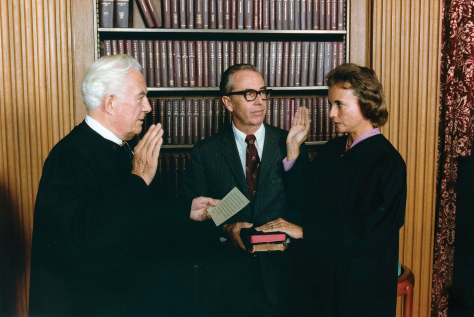
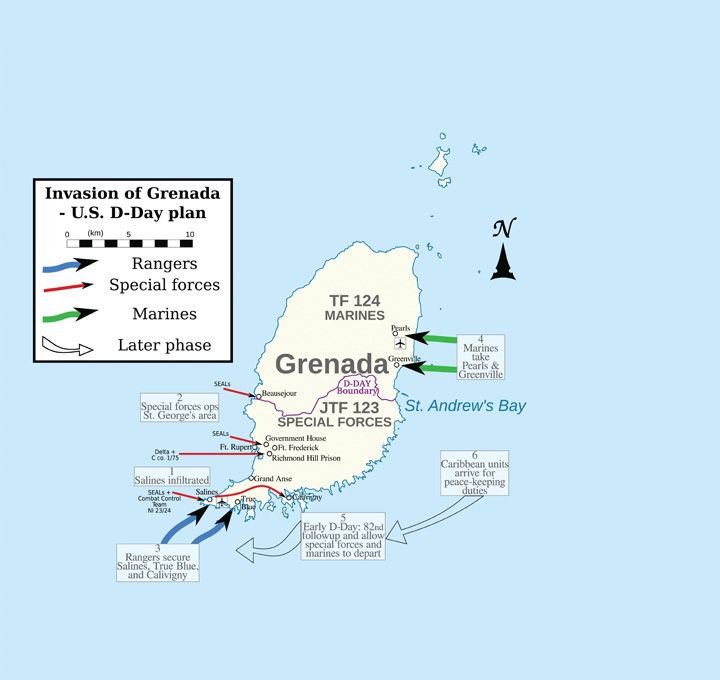
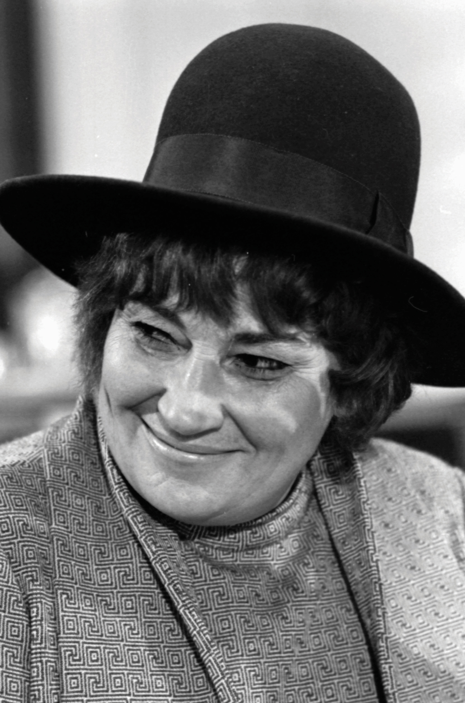
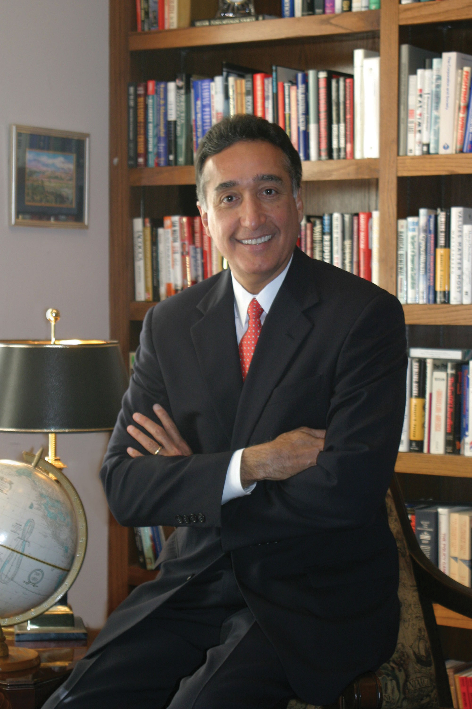

By the summer of 1980, most Americans were deeply concerned about the economy and world events. Stagflation had taken its toll on the economy and unemployment approached 8 percent. Interest rates remained so high that few businesses or consumers could take out loans. The energy crisis continued to remind Americans of their nation’s vulnerabilities. Even worse, America seemed helpless in the face of Iranian terrorists who still held fifty-two American hostages. Americans were also concerned that annual budget deficits continued even after the Vietnam War ended. As the 1980 elections arrived, only a third of Americans approved of the job President Jimmy Carter was doing. Only Nixon, at the height of the Watergate scandal, had lower approval ratings.
In response to all of these factors, many Americans supported a growing conservative movement that promised a new direction for the nation based on limiting the size and power of the federal government. Other conservatives lashed out at liberal programs they believed had failed and recipients of welfare, recent immigrants, and supporters of affirmative action. Former actor turned politician Ronald ReaganA leading Hollywood actor for several decades, Ronald Reagan entered politics after a rousing speech endorsing conservative presidential candidate Barry Goldwater in 1964. Two years later, Reagan became the governor of California. Reagan nearly defeated Ford in the Republican primary of 1976 and would win a landslide election in 1980 to become the fortieth president. spoke to the concerns of both groups of American conservatives—those who supported the ideas of conservative political and economic theorists and those who believed that America’s problems were the result of a parasitical infection on the body politic. Reagan also appealed to the nostalgia of older Americans who longed for the years when US military’s might was unchallenged and when US factories produced nearly half of the world’s manufactured goods.
Reagan confidently and warmly projected the simple message that he would ensure that American economic power and prestige was restored. Reagan’s campaign was upbeat, simple, direct, and for many of his supporters, uplifting. Reagan’s fetes also reminded many Americans of an earlier time they hoped to return to. Reagan rallies were as full of patriotic optimism as a Fourth of July parade, while Carter’s speeches often felt more like lectures about the problems the nation faced. The message resounded with older whites, especially among white males who were twice as likely to vote for Reagan as nonwhites. For many Americans, however, the way Reagan spoke with and about minorities and the Reagan campaign’s cavalier attitude toward their perspectives threatened to reverse the progress the country had made.
Many conservatives felt that their perspectives had been marginalized during the 1960s and 1970s. Conservative politicians believed that the shortcomings of liberalism had made many Americans eager for a different approach. These conservative politicians and voters were part of the New RightA coalition of fiscal and social conservatives who supported lower taxes and smaller government while espousing evangelical Christianity. The New Right rose to prominence in the late 1970s and early 1980s and supported political leaders such as Ronald Reagan. of the 1980s, a group that perceived their nation had been derailed by a liberal agenda in recent years. Conservatives hoped to reduce the size of the federal government beyond the military, decrease taxes and spending on social welfare programs, and find a way to repair the nation’s economic strength and global prestige. Most conservatives supported the end of segregation and hoped to end discrimination in employment. However, they disagreed with many of the strategies used to achieve these goals and hoped to reverse programs designed to achieve racial balance through affirmative action.
Figure 13.1

Ronald Reagan shakes hands with President Gerald Ford at the 1976 Republican National Convention. Reagan had just been narrowly defeated by Ford in the Republican primaries, but Reagan’s strong showing against the incumbent president demonstrated the former actor’s political appeal to a growing conservative movement.
Just as the New Left sought to distance themselves from the Socialists of the “old left,” the New Right attempted to shed its association with the “old right” that had attempted to keep women and minorities “in their place” during previous decades. The New Right hoped to mix compassion and conservatism, assisting the poor but avoiding the direct welfare payments they believed discouraged individual accountability by rewarding those who did not work. They also hoped to replace the nation’s progressive tax code that charged wealthier Americans higher rates with a new tax bracket they believed was more balanced. By this perspective, Americans who had demonstrated initiative and entrepreneurial skill should be permitted to keep more of their income as a means of encouraging reinvestment.
The conservatives of the 1980s had learned from the social movements of the 1960s, especially the importance of simple and direct messages appealed to Americans’ sense of justice. However, while liberals had looked toward the future in crafting their message, conservatives looked toward the past. This orientation helped the New Right win many supporters during an era of uncertainty about the future. It also offered tremendous appeal to those who feared that traditional values were slipping away. At the same time, the nostalgic orientation of many conservatives encouraged the creation of a sanitized version of the past that neglected America’s many failures both at home and abroad. Perhaps unintentionally, the New Right appealed to many of the same people who had opposed the expansion of civil rights. As a result, there remained a tension between those of the New Right that sought both equality and limited government and those who simply wanted to roll back the clock to another era.
What the base of the conservative movement lacked in racial diversity, it sought to make up by representing a number of different backgrounds and perspectives. Evangelical Christians, struggling blue-collar workers, middle-class voters, and disenchanted Democrats united with economic conservatives and business leaders. Together these individuals supported a movement that merged conservative and probusiness economic policies with socially conservative goals such as ending abortion, welfare, and affirmative action. Interest groups affiliated with the Republican Party also stressed a return to moral standards they identified as “family values.” These conservative groups increasingly viewed opposition to multiculturalism, gay rights, the feminist movement, abortion, busing, affirmative action, illegal immigration, and welfare as panaceas for the nation’s ills.
This new conservative movement advanced a populist rhetoric that appealed to the working and middle classes in ways not seen in US politics since the turn of the century. Unlike the People’s Party of the 1890s, which focused primarily on economic issues, the public focus of the new conservative coalition was on social issues. The challenge for the New Right was that modern politics required the mobilization of both wealth and the masses, two groups that had traditionally opposed one another. The strength of the conservative movement was its ability to weld probusiness economic policies with support for conservative social issues in a way that attracted a core group of devoted supporters and the backing of wealthy donors.
Without the Evangelical revival of the late 1970s and early 1980s, such a coalition might have never occurred. The United States experienced a period of religious revivalism during the late 1970s and early 1980s. Similar to the Great Awakening of the early eighteenth-century, charismatic religious leaders became national celebrities and attracted legions of loyal followers. The most outspoken of these leaders were a new breed of clergy known as “televangelists” who attracted millions of loyal viewers through religious television programs. Televangelists like Billy Graham, Pat Robertson, and Jim and Tammy Faye Bakker saw their virtual congregations grow as they progressed from old-fashioned revival meetings to radio programs and eventually popular television programs like the 700 Club—each broadcast on several Christian cable networks.
Figure 13.2

Evangelical Christians formed the base of the New Right. Pictured here is a group of fundamentalist Christians in Charleston, West Virginia. Evangelicals made national headlines in 1974 when they protested the use of textbooks they believed contained a liberal agenda to spread ideas such as multiculturalism.
Evangelical Christian denominations experienced a tremendous surge in membership during these years. Southern Baptists become the nation’s largest denomination while the more rigidly structured Christian denominations declined in membership. Christian religions in which membership largely shaped one’s daily life, such as the Church of Jesus Christ of Latter-Day Saints (known colloquially as the Mormons), Seventh-Day Adventists, and the Assembly of God also experienced tremendous growth and influence.
While many of these churches avoided direct political affiliations, some televangelists and independent clergy saw political action as part of their mission. These and other religious leaders advocated a host of conservative social issues and recommended political candidates to their followers. Most churches avoided explicit support for a particular candidate or political party for a variety of reasons. Churches were exempt from taxes because of the doctrine of separation of church and state. Many believed sponsoring political candidates threatened that separation and would lead to forfeiture of a church’s tax-exempt status. Televangelists like Jerry Falwell challenged that division along with several other leading religious conservatives. Falwell hosted the popular Old Time Gospel Hour and solicited his donors to join his political action committee, known as the “Moral MajorityA political action group consisting of an estimated 4 million evangelical Christians at its peak in the early 1980s. The Moral Majority was led by televangelist Jerry Falwell and supported issues such as legalizing school prayer, teaching creationism rather than evolution, and outlawing abortion..” These and other political groups claimed responsibility for the election of President Ronald Reagan and a host of other conservative Republicans. The boast was likely a stretch in the case of Reagan, especially given the public’s frustration with Carter and the small following these interest groups enjoyed in 1980. However, during the 1982 congressional election, groups such as the Moral Majority enjoyed the support of millions of donors. As a result, the endorsement of these religious-political groups was essential in many congressional districts.
The religious fervor of the 1980s featured aspects of protest against the materialism of the decade, as well as a celebration of it. Just as some Puritans of the colonial era believed that wealth was a sign of God’s favor, wealthy individuals during the 1980s were more likely to flaunt their affluence than previous generations. Displays of conspicuous consumption had become regarded as unsavory during the more liberal era of the 1960s and 1970s, but during the 1980s, they were once again celebrated as evidence that one adhered to righteous values such as hard work and prudence. Many of the leading televangelists joined in the decade’s celebration of material wealth by purchasing lavish homes and luxury items. The result was a number of high-profile investigations into the possible misuse of donations by televangelists.
Many conservatives, especially white Southerners, inherited traditions of suspicion toward the federal government. This circumspection was magnified by the federal government’s legalization of abortion and stricter enforcement of the doctrine of separation of church and state in the public schools. Conservatives also bristled at many of their governmental leaders’ growing toleration of homosexuality while mandatory school prayer and state-funded Christmas celebrations were forbidden. From the perspective of social conservatives, each of these occurrences demonstrated that large and powerful government bureaucracies were more likely to support liberal causes. As a result, Evangelicals increasingly supported both social and fiscally conservative causes. Tax breaks, the elimination of welfare programs, and the reduction in the size of the federal government became leading issues of the new Evangelicals. However, most of the new religious right also supported increasing the power of the government to ban behaviors they believed were sinful, while supporting increased authority for law enforcement and larger budgets for national defense.
A variety of conservative intellectuals who were concerned with each of these social issues had developed a number of organizations dedicated to advancing their ideals among the American people. These “think tanks,” as they would euphemistically be called, included the American Enterprise Institute and the Heritage Foundation, among others. Each of these groups depended on the donations of both rank-and-file conservatives and a number of wealthy donors. As these groups and the conservative causes they believed in grew in popularity, conservative politicians won elections by promoting the issues these think tanks supported. Although many conservative politicians tended to subordinate their economic platform in favor of discussing hot button conservative issues that mobilized their supporters, by 1980, many conservative voters also came to believe that lowering taxes for corporations and the wealthy while reducing government spending for social programs would lead to greater prosperity. In other words, the conservative movement succeeded not only by mobilizing voters on social issues but also by altering the perception of the government’s proper role in the economy. Whereas middle- and working-class Americans had been more apt to support unions and progressive tax policies during the previous three decades, by the 1980s, a growing number of these same individuals agreed with conservatives about the potential danger of powerful labor unions and feared that higher taxes for corporations and the wealthy might discourage economic growth.
Reagan first tapped into the frustrations of the 1970s as a gubernatorial candidate in California promising to cut taxes and prosecute student protesters. As a presidential candidate in 1980, he took every opportunity to remind Americans of the current recession. The Reagan campaign convinced many voters that Carter had made the problem worse by pursuing strategies that tightened the money supply and pushed interest rates as high as 20 percent. Although inflation was the main reason these rates were so high and Carter’s actions would reduce inflation over time, the inability of corporations and consumers to borrow money in the short term added to the dire condition of the economy in the summer of 1980. “Are you better off than you were four years ago?” Reagan asked, connecting the nation’s economic problems to the Carter administration. The fact that the recession predated Carter’s election mattered little. “A recession is when your neighbor loses a job,” Reagan later remarked as the election neared. “A depression is when you lose yours.” After pausing for effect, the former actor delivered his final line: “and recovery begins when Jimmy Carter loses his.”
Candidate Reagan promised to reverse America’s declining international prestige and restore its industrial production—two problems many agreed had grown worse under Carter’s watch. Reagan also promised to reduce taxes in ways that would spur investment and job creation, reduce the size of the federal government, balance the federal budget, and strengthen national defense. More importantly, he communicated what most Americans believed to be true—that theirs was a strong nation with a noble past. Behind Reagan’s populist appeal was one essential message with a long history in American political thought: freedom from government rather than freedom through government. Reagan preached that the cure for America’s ills was to take decision making and power away from Washington and place it in the hands of US businesses and consumers.
Figure 13.3

As a Hollywood actor, Ronald Reagan played the character of Notre Dame’s George Gipp. In this photo, Reagan is holding a customized jersey bearing the nickname “Gipper” but featuring America’s colors instead of the gold and blue of Notre Dame.
Critics of the California movie star claimed that Reagan’s rhetoric was hollow and clichéd, even if it was uplifting. They likely missed the point: Reagan was appealing to a nation that felt like it needed a win. Years before, Reagan starred in a film where he played the role of legendary Notre Dame athlete George Gipp. As the nation appeared to be up against the wall, the former actor now assumed the role of Notre Dame coach Knute Rockne, asking America to “win one for the Gipper.” Reagan’s use of the phrase was out of context, historically inaccurate, and offered nothing in terms of policy or substance. And it was political magic. If presidential elections were popularity contests, Carter did not stand a chance.
With his charisma, charm, and populist appeal, Reagan won the general election by sweeping forty-four states. The Republican Party won control of the Senate for the first time in several decades. The landslide was not as clear as it might appear, however, as voter turnout was so low that only a quarter of Americans of voting age actually cast ballots for Reagan. As some historians often point out, had voter turnout been the same as previous elections and if those voters had followed historical patterns (such as union members supporting the Democratic candidate), Carter would have actually won in a landslide. At the same time, voter apathy is usually a reflection of how many Americans feel about their government. As a result, the low turnout may have been its own kind of referendum on Carter’s presidency. The most significant factor in the election was the political power of the New Right. More than 20 percent of self-identified Evangelical Christians who had voted for Carter in 1976 indicated that they voted for Reagan in 1980.
Even Reagan’s opponents conceded that the new president was one of the finest public speakers when it came to delivering a scripted oration. Years in front of the camera meant that Reagan instinctively knew where to stand and what camera to look at, much to the chagrin of interns whose job it was to place tape marks and arrows on stages across the country. However, Reagan was often adrift when speaking without a script. He relied heavily on clichés and empty platitudes, and sometimes told stories from popular films as if they were part of history or his own life.
While most of Reagan’s tales were anecdotal in nature and some were simply meant to illustrate a point, Reagan’s casualness with the truth could also be quite damaging. As a candidate, Reagan aroused populist anger against welfare recipients by fabricating a story about a woman in Chicago’s South Side neighborhood. This scam artist reportedly drove a new Cadillac and had received hundreds of thousands of dollars in welfare checks under multiple names. Later investigations demonstrated that Reagan had made up the entire story. Even if Reagan would have offered a retraction, the populist anger against welfare recipients could not be easily reversed. Although the woman was fictional, Reagan played heavily on prejudices against African Americans by describing this “welfare mother” in terms that were clearly meant to imply race.
Many scholars in subsequent decades have questioned whether social conservatives had actually been tricked into voting for politicians who represented the interests of the wealthy and corporations while offering little support for social issues. Reagan had been president of the Screen Actors Guild and could hardly be counted on to support tougher censorship laws. As governor of California, Reagan had supported a reproductive rights law that removed barriers on abortions. Although he relied on the support of pro-life groups, once President, Reagan avoided direct action on the controversial subject of abortion. He also did little beyond offering verbal support for socially conservative causes such as school prayer.
Some observers were surprised that Evangelicals would support a candidate such as Reagan, a divorced Hollywood actor who did not attend church. In contrast, Jimmy Carter was a born-again Christian. However, Evangelicals understood that Carter did not believe that his personal religious ideas should influence policy and he generally supported the more liberal views of his Democratic supporters. In addition, many working-class voters supported Reagan’s proposed tax cuts, believing they would result in domestic job creation. Although their reaction confounded many liberals, cuts to welfare were also popular with the working-class voters because welfare had failed to eliminate poverty and seemed in many cases to offer a disincentive to work. Finally, in the wake of scandals involving union leaders such as Jimmy Hoffa, many social conservatives were also hostile toward unions.
Although he did little to further socially conservative causes through legislation, Reagan took immediate action against unions. One of Reagan’s first actions as president was to fire more than 10,000 federal air traffic controllers who were part of a union that was striking for a pay increase. Reagan replaced these workers with military personnel on active-duty orders, a move that quickly destroyed the strike and the union. Reagan also supported employers who used similar measures to crush labor activism. And yet 40 percent of union members still voted for Reagan over the Democrat Walter Mondale in 1984. Reagan and other conservatives also supported measures that lowered taxes for corporations and supported free trade policies that made it easier for US companies to open factories in foreign countries. By 1986, Reagan had slashed tax rates for the wealthy by more than 50 percent without similar cuts for the middle and lower classes. Although it confounded many Democrats, Reagan retained the support of many union voters and lower-income Americans through his second term.
Women had composed both the leadership and the rank-and-file of the New Left. The role of women was equally as important to the New Right during the 1980s. Mobilized in opposition to the Equal Rights Amendment (ERA), conservative women mirrored some of the tactics and organizational structure of civil rights activists. Conservative women leaned heavily on the church and other institutions, and also mirrored the organizational structure of previous social movements. The names of conservative women’s groups reflected their belief in traditional notions of family and gender. Women Who Want to be Women (WWWW) and Happiness of Motherhood Eternal (HOME) were two such organizations. Conservative women viewed the rapprochement of straight and lesbian activists within the feminist movement, along with recent decisions by the Supreme Court upholding abortion laws and banning school prayer, as proof that they were waging a war against the ungodly forces of both Sodom and Gomorrah.
Reagan’s nomination of Sandra Day O’ConnorAn attorney originally from El Paso, Texas, Sandra Day O’Connor became the first female Supreme Court justice in 1981. encouraged conservative women, less as a symbol of women’s advancement as the first woman to join the Supreme Court than the hope that O’Connor would reverse Roe v. Wade. Despite her conservatism, O’Connor and other Supreme Court justices upheld the legality of abortion in a number of cases, although they did support an increasing number of restrictions to the procedure. Many conservatives and Evangelicals felt betrayed by the Republican Party and began organizing direct protests against abortion providers.
Figure 13.4
Sandra Day O’Connor became the first woman on the US Supreme Court. Because she had a conservative orientation, many of the president’s supporters among the New Right hoped she and other Reagan appointees might overturn Roe v. Wade.
Thousands of antiabortion activists descended on Wichita, Kansas, under the auspices of a group called Operation Rescue in 1991. The majority of the participants in the self-labeled “Summer of Mercy” were women, many of whom physically blocked the entrances to abortion clinics and were among the 2,000 protesters who were arrested. At the same time, many conservative and evangelical women who opposed abortion also opposed the aggressive tactics of Operation Rescue. This was especially true of the individuals who harassed and even murdered abortion providers that summer. More representative of the conservatism of women during this period were the hundreds of thousands of local women who led community organizations that sought encourage single mothers to consider adoption. Others joined organizations that sought to ameliorate some of the social changes they felt had led to increases in the number of single mothers. Other conservatives sought to prevent drug addiction, crime, and pornography, and to reverse societal toleration for obscenities in Hollywood.
Protests against an increasingly secular popular culture raised questions regarding traditional modes of gender-based divisions of labor in modern families. For millions of women, a life dedicated to family was an important and fulfilling vocation, a dignified calling they feared the feminist movement sought to slander. Books written by conservative homemakers and career women alike proliferated during the 1970s and 1980s. For example, Helen Andelin’s Fascinating Womanhood sold millions of copies and launched a movement that inspired thousands of women to create and attend neighborhood classes and discussion networks. Andelin believed that the ideal family was one of male leadership and provision alongside female submission and support. Andelin asked her readers to consider what traits made them desirable to their husbands and strengthen their marriages by finding ways to increase this desire and better serve their husband’s needs. Although historians might question the accuracy of the author’s claims that this patriarchal model was ever typical in any era of American family life, Andelin described a mythical past that most Americans believed had existed. For millions of conservatives seeking a return to a bygone era, it naturally followed that the family should seek a return to traditional arrangements based on paternal leadership.
Other conservative women criticized Andelin as promoting a fiction that more resembled the 1974 novel The Stepford Wives than a well-adjusted family. Many conservative women simply sought to counter the image that stay-at-home mothers were somehow naive or victimized. These women agreed that gender discrimination did limit the options of women in the past and believed that women should be free to pursue careers. However, these women also feared that elevating the dignity of women in the workforce had at least unintentionally led many to question the dignity of labor within the home. Not all who espoused a return to traditional modes of gender and family were conservatives or Evangelicals, and many women who had enjoyed successful careers outside the home reported their equal happiness as homemakers. These women hoped to encourage the recognition that many “traditional” couples were genuine partnerships based on mutual respect.
However, for millions of US families, the tradition of women not working outside the home was not economically feasible. By the early 1980s, the majority of married women worked both inside and beyond the home. Many found the experience to be anything but liberating. While these women recognized that gender discrimination limited their career options, they aggressively countered notions that homemaker was a career of last resort. One of the leading criticisms of these women against the idealized superwoman of the 1980s who balanced career and family was related to the sacrifices such balancing required. Sociologists labeled the added burden of career and family the “second shiftA phrase connoting the added burdens of married women with full-time careers who were still expected to fulfill the domestic responsibilities of a homemaker and parent.,” reflecting the frustration of women who found that their husbands seldom agreed to share domestic responsibilities, even though wives were increasingly likely to work the same number of hours outside of the home.
Income tax in the United States historically followed the doctrine of progressive taxation, creating tax brackets that increase as an individual earns more money throughout the year. For example, a physician making $200,000 might have the majority of her income taxed at 40 percent, while a firefighter who made $35,000 would be taxed at 20 percent, and a college student working part time who earned only $5,000 might pay no federal income tax at all. For Reagan, the progressive tax structure was responsible for the persistence of America’s economic problems. As a Hollywood actor in an era where taxes on those with large salaries was very high, Reagan saw more and more of his income go to taxes as his annual earnings increased. After producing a couple of films each year, any additional money Reagan might make could be taxed at rates approaching 90 percent when adding California’s state tax to the federal rate. In response, Reagan chose to make only a handful of films each year.
Reagan drew heavily from his experience as an actor in many aspects of his presidency. In the case of tax policies, the president believed that high tax rates discouraged other talented and successful individuals in their chosen fields from making a maximum effort each year. In his field, it might mean fewer movies. However, if entrepreneurs and financiers followed a similar strategy, then high taxes would constrain economic growth. Believing in a sort of economic Darwinism, Reagan argued that the best way to encourage job creation was to reduce the taxes for high-income Americans because these elites had demonstrated a talent for creating wealth. The wealthy, Reagan argued, could be expected to use their money to produce more wealth through investment and innovation that would spur job growth for everyone else. To this end, Reagan’s Economic Recovery Tax Act of 1981 reduced the top tax bracket from 70 to 50 percent while slashing taxes paid by corporations.
The super wealthy were not the only beneficiaries of Reagan’s tax cuts, which led to an overall reduction of tax rates by 30 percent throughout his first term. More controversial was the reduction in inheritance taxes. These taxes were not based on earned income, but rather taxed the transfer of wealth from one generation to another. These taxes had inspired many of the richest Americans to donate their fortunes in previous decades. As a result, removing the inheritance tax was much harder to justify in terms of economic stimulus.
Figure 13.5

President Reagan discusses a chart that portrays his tax plan as offering substantial savings for the average family. In reality, Reagan’s tax policies favored the wealthy and corporations, something the president’s supporters believed would result in greater overall economic development.
In his second term, Reagan passed the most sweeping changes to the tax code since the Sixteenth Amendment established the modern system of federal income tax. The Tax Reform Act of 1986A sweeping tax reform law that simplified the tax code and eliminated some tax shelters and other methods that had been used in the past to hide income or illegally reduce one’s tax burden. The law reduced the top tax rates wealthy individuals paid from 50 percent to 28 percent, while raising the minimum tax rate to 15 percent lowered the highest tax bracket from 50 percent to 28 percent while increasing the minimum rate from 11 percent to 15 percent. The reform also eliminated many of the various tax brackets between these rates, meaning that most Americans either paid 15 percent or 28 percent. A few provisions helped the poor, such as a cost-of-living adjustment to the amount of money that was exempt from taxation so that those living below the federal poverty level no longer received a tax bill. Other reforms eliminated various tax shelters for individuals, although many of these ways of hiding income remained for corporations. The law also required parents to list the social security numbers for each dependent child they claimed for tax purposes, eliminating the ability of individuals to increase their tax deductions through fraudulently listing imaginary dependents. As a popular economist has shown, the reform led to the disappearance of 7 million “children” on April 15, 1987.
Reagan’s tax cuts reduced federal revenue by hundreds of billions of dollars each year. This reduction of income could only be offset by equal reductions to the federal budget, borrowing money, or a massive economic boom that created so much taxable wealth that the government still took in more money each year. Reagan promised the latter would occur—the result of an unfettered economy free from aggressive taxation and government regulation. Reagan also proposed significant budget cuts to Social Security and Medicare, just to make sure that the federal budget could be balanced while the nation awaited the economic bonanza he believed his tax cuts would produce. However, cuts to Social Security and Medicare provoked outrage, and Reagan quickly reversed course. In the end, the president approved a budget that was similar to previous years except with massive increases for the military.
Reagan’s defense budgets continued to grow each year, doubling the annual budget to an incredible $330 billion by 1985. As a result, many challenged the president to identify exactly how he would fulfill his promise to reduce the nation’s indebtedness. Even Reagan’s budget director admitted that his administration’s economic projections were based on an optimistic faith that reducing taxes for the wealthy would “trickle down” to the middle and lower classes through job creation. This confidence in supply-side economicsAn economic theory that suggests government policies should be geared toward keeping revenue and economic decisions in the hands of businesses and consumers. While Keynesian economics suggests using the federal government to stimulate growth through a variety of measures, supply-side economics suggest lowering taxes and regulations on business and trade as ways of stimulating the economy. that emphasized government intervention to spur growth and investment through tax reduction was certainly not a new idea. However, because the Reagan administration pursued the principles of supply-side economics with such vigor, the basic theory that increasing the wealth of the wealthy would eventually trickle down to the rest of the nation became known as “Reaganomics.” Critics of the president used other monikers such as “voodoo economics” to describe Reagan’s theories.
Supporters of Reagan’s belief in supply-side economics point out that the Dow Jones Industrial Average—a measurement of the value of the 30 largest companies in the United States—tripled during the 1980s. Inflation fell from over 10 percent when Reagan took office to less than 4 percent, while unemployment fell from 7 percent to just over 5 percent. Critics of Reagan point to the increasing disparity between the rich and the poor that also accelerated during the 1980s as being the real consequence of Reagan’s regressive tax policies. They also disagree that tax cuts for the wealthy created jobs, pointing out that the percentage of jobs that paid wages above the poverty level had declined. Critics agree that tax cuts for corporations provided additional revenue for investment, but argue that much of this investment had been used to create manufacturing facilities in other nations.
Although the president’s critics usually concede that Reagan’s tax cuts and military spending did spur the economy and create some jobs in the short run, they argue that they did so only by borrowing massive sums of money. The size of the national debtThe total amount of money that a nation presently owes its creditors.—the cumulative total of all the money the federal government owes—tripled from $900 billion to nearly $3 trillion in only eight years. Between the start and conclusion of the Reagan administration, the United States had gone from being the leading creditor in the world to the most indebted nation in the world.
Previous administrations tolerated deficit spendingThis occurs when a government borrows money to finance its operations.—the practice of borrowing money to make up for the amount the government overspent in one particular year. However, the amounts the government borrowed were usually quite small unless the nation was at war. After the 1930s, some government borrowing was also accepted in times of financial crisis as a way to spur the economy. Neither scenario applied to the eight peaceful years of Reagan’s presidency, yet the government accumulated a debt that was three times greater than the combined annual deficits of the past two centuries. And contrary to the tradition of repaying the debt, deficits and debt continued to grow at the same pace when former vice president George H. W. Bush took office. The interest on the debt alone quickly became the largest non-defense-related federal expenditure. As a result, any effort to reduce the national debt could only be achieved after balancing the budget and paying hundreds of billions of dollars in interest.
Political candidates are known for making sweeping promises, yet the question of whether Reagan kept his pledge to restore the strength of the US economy remains an item of fierce debate. Democrats are quick to point out that Carter’s decision to halt inflationary measures as well as the normal business cycle were part of the reason the economy recovered during the 1980s. Reagan’s critics also contrast his promise of fiscal responsibility and smaller government with the tripling of the national debt and the expansion of the federal government, which grew in terms of both budget and the number of federal workers. Furthermore, President Reagan never submitted a balanced budget, and even the debt projections that came from his budget office were too optimistic.
Reagan himself usually deflected the criticisms of his economic policy in a good-humored manner that undermined some of his critics. “You know economists,” he would respond, they “see something that works in practice and wonder if it works in theory.” Reagan even seemed impervious to an assassin’s bullet that ricocheted and lodged near his heart in March 1981. The unfazed president thanked nearby secret servicemen for their service and even joked with surgeons by asking if they were Democrats before they removed the bullet. Most Americans lacked a sophisticated understanding of supply-side economics, but they knew the economy had floundered under Carter and was recovering under Reagan. Questions regarding the long-term wisdom of Reagan’s policies continue to engage historians and pundits alike, with responses usually reflecting both economic theory and one’s political orientation.
While deficits would not be felt for many years, government deregulationDeregulation is the reduction or elimination of laws previously enforced on a particular industry. of various industries would have a more immediate impact on the economy during the 1980s. Democrats and Republicans alike approved the elimination or reduction of government price controls during the 1970s and 1980s. Nixon removed price controls of oil and natural gas in response to the Organization of the Petroleum Exporting Countries (OPEC) embargo, and Carter eased price controls and regulations governing the transportation industry. Reagan accelerated this trend, believing that most forms of federal regulation, including consumer and environmental protection laws, hampered business growth. In contrast to the Department of Defense, who was told by the president to “spend what you need,” Reagan slashed the budgets of federal agencies like the Occupational Safety and Health Administration (OSHA) and the Environmental Protection Agency (EPA). More disturbing to environmentalists, the EPA reinterpreted the Clean Air Act and other laws in a way that was so favorable to industry that an investigation was conducted. The inquiry revealed that twenty administrators in the EPA had each accepted corporate bribes.
Because utility companies were public utilities and had a natural monopoly in the communities they served, these industries had been heavily regulated. However, Reagan reduced these regulations in hopes of increasing competition and reducing prices. Airlines and other common carriers were treated much the same way, with the federal government transferring the control over prices to the executives of these companies and the free market. Energy prices and airfares fluctuated according to market forces following deregulation. These reforms led to mostly lower prices in air travel, but also led to numerous difficulties for utility consumers in some markets.
While the results of deregulation were mixed in most industries, the deregulation of the financial industry led to complete disaster. Banks known as savings and loan institutions (S&Ls) had a reputation for safety because they followed strict rules regarding the ways they could invest their depositors’ money. Chief among these rules was the provision that S&L loans be backed by collateral such as a home mortgage. However, interest rates were at record highs during the early 1980s, and the Reagan administration agreed to ease these restrictions and permit S&Ls to make riskier loans. By the late 1980s, hundreds of the S&Ls were facing bankruptcy due to bad loans and a decline in the real estate market.
Because S&Ls were part of the banking system, each depositor’s savings accounts were insured by the federal government. As a result, the government was forced to pay more than $150 billion in federal bailouts to make sure families and businesses that deposited their money were protected. Although both parties approved the deregulation of the banking and investment industry, the resulting failure of many leading financial institutions and resulting Savings and Loan BailoutAs a result of deregulation and bad investments by banking institutions known as savings and loan institutions, the government paid out at least $150 billion to holders of insured deposit accounts at these institutions. of the late 1980s and early 1990s was blamed almost solely on the Republican Party. Given Republican efforts to lower corporate taxes and the tendency for Republicans to be the most enthusiastic supporters of deregulation, it is easy to see why most Americans blamed the party of Reagan when deregulation led to default. However, many of the congressmen who approved the deregulation and were later investigated for accepting illegal donations from members of the banking industry were Democrats.
The Department of the Interior had been insulated from controversy since the Teapot Dome Scandal of the 1920s. However, Reagan appointee and secretary of the Interior James Watt kept his agency in the headlines throughout the 1980s. One of Watt’s comments regarding his religious beliefs were regularly quoted out of context by the political left in an attempt to discredit the secretary as well as other religious conservatives. During his Senate confirmation hearing, Watt responded to a question about long-term preservation of resources by stating that he did not know how many generations would pass before the return of Christ but that Americans must shepherd their resources for future generations until that time.
Many on the left at the time reported that Watt had suggested environmental policies did not matter because the end of the world was nigh. Watt himself was fond of misrepresenting the words of his opponents and had earlier declared that there were only two kinds of people in the United States: liberals and Americans. This war of words did not mask the actions of Watt’s department for long, as nearly two-dozen high-ranking officials were forced to resign for improper actions. In addition, several officials were convicted of accepting bribes or other ethics violations. Similar to the Teapot Dome Scandal, Department of the Interior officials permitted oil and timber companies to lease, log, mine, drill, and otherwise commercially develop millions of acres of previously protected areas of the federal domain at prices that were often far below estimated market value. One of the most immediate results was the growth of environmental interest groups such as the Sierra Club, whose protests resulted in some areas of the federal domain again being declared off limits to developers.
The Reagan administration also approved a wave of corporate mergers that consolidated vital industries in the hands of a few companies. Critics protested that the government-approved mergers created monopolies. The architects of these deals argued that the mergers created stronger and more efficient businesses. Other practices that were common throughout the 1980s, such as leveraged buyouts, increased the risks to the entire financial system. These leveraged deals permitted a group of investors to purchase a controlling stake in a publicly traded company by using loans to purchase shares. In addition, these investors often secured the loans by using the stock they had just purchased on credit as collateral. As a result, a small drop in the price of any particular stock could bankrupt an entire company and send shockwaves throughout the financial system.
This is precisely what happened on October 19, 1987, when Wall Street experienced the worst crash in its history. Although the market had risen quickly in proceeding years due to speculation, these gains were erased in a single day when the Dow Jones average fell over 20 percent. Companies such as RJR Nabisco that participated in the leveraged buyouts were forced to lay off thousands of employees, yet the CEO of the company received over $50 million in compensation. Brokers that facilitated these and other risky strategies, such as junk bond investor Michael Milken, earned over $500 million in 1987 alone. Unlike previous Wall Street financiers, such as JP Morgan, Milken’s deals did not support economic growth by matching legitimate entrepreneurs with investors. Instead, Milken’s incomes were commission-based, which led him to violate federal laws in order to increase the volume of his transactions. Milken served only two years of a ten-year prison sentence and remains one of the wealthiest men in America.
Accompanying many of these high-stakes mergers was the dreaded news of “restructuring” that often meant the loss of jobs for the employees of the affected corporations. For those in manufacturing, restructuring was often a code word for laying off employees to save money. Sometimes restructuring meant that a company was preparing to close a factory in the United States in favor of another country where operating costs were lower. At other times, it simply meant laying off full-time employees with salaries and benefits and replacing them with low-wage hourly workers.
Even privately owned companies that had historically offered high wages to their employees, such as Levi Strauss & Co., soon adopted these strategies. In some cases, these companies had no choice if they wanted to stay competitive. At other times, these measures were simply used to enhance profitability. Levi’s blue jeans were the most recognizable American fashion; yet between the early 1980s and 2003, each of the dozens of US Levi’s factories was closed. Each announcement resulted in thousands of workers losing jobs that were relatively well paying. Although what was happening at Levi Strauss & Co. was typical of the clothing industry, the fact that the United States no longer produced Levi’s came to symbolize the US trade imbalance, which grew to $170 billion by 1987.
President Ronald Reagan’s top priority while in office was related to international affairs. He was not satisfied with containing Communism, but instead sought to “roll back” its influence throughout the globe. Reagan’s style of leadership emphasized leaving the execution of his ideas and policies to others. The president’s strategy regarding world affairs, dubbed the Reagan DoctrineA guiding force in Reagan’s foreign policy, the Reagan Doctrine suggested that the United States must support the armed forces of any regime that was waging war against Communist forces., likewise relied on finding allies who were willing to support his anti-Communist worldview rather than directly deploying US forces. As a result, the heart of the Reagan Doctrine was the president’s announcement that the United States would provide aid to all groups fighting against Communist forces worldwide. Supporters of the Reagan Doctrine pointed out that military aid and covert CIA operations resulted in anti-Communist victories without risking large numbers of US troops or repeating the experiences of Korea and Vietnam. Critics feared that these covert operations may have unintended consequences similar to the Bay of Pigs Invasion and the 1953 coup that placed the shah of Iran in power. Others pointed out that many of the recipients of US military aid, such as the Nicaraguan Contras and the Afghan Mujahedin, used methods and maintained beliefs that many Americans opposed.
Figure 13.6

President Reagan meets with leaders of Afghan forces opposed to the Soviet Union in 1983.
These conflicts and internal contradictions were especially troublesome in the Middle East, where Cold War tensions coexisted with historic rivalries between East and West. The ease with which Egypt was able to play the United States and Soviet Union against one another during the Suez Crisis demonstrated the fragility of détente in the region. Tensions rose even further in the late 1970s as the Soviets hoped to regain influence in the Middle East by supporting a number of Marxist regimes along the Red Sea in East Africa and in neighboring Afghanistan. In the spring of 1978, Communists in Afghanistan temporarily seized power with the aid of the Soviet Union. However, this government proved unpopular with the majority of the Afghan people, partly due to its support for women’s rights and other liberal and secular reforms. For the Afghans, this secular and pro-Soviet regime seemed much like the pro-Western government of Iran that had just been overthrown by the Muslim cleric Ayatollah Khomeini.
The Soviets and Americans were stunned. In just one year, religious leaders in Iran had expelled the US-backed shah and Islamic rebels were engaged in a civil war that threatened to overthrow the pro-Soviet government of Afghanistan. If the Islamic Afghan rebels prevailed and started their own government, the Soviets feared, they might also follow the Egyptian model of expelling Soviet military advisers in return for US aid. If this happened, some Soviet leaders feared, Afghanistan might form a deal with the West that might someday lead to the construction of US missile bases along the Soviet border.
Applying their own version of the domino theory, Soviet leaders responded to the growing Afghan Civil War by sending 75,000 troops to support the pro-Soviet regime. With little understanding of the history, geography, religion, or culture of Afghanistan, Soviet leaders predicted that their troops would return within a month after crushing all resistance to the Communist government in Kabul. Instead, the Soviet Invasion of AfghanistanBegan on Christmas Day in 1979 and lasted for a full decade. The Soviet Union was attempting to prop up an unpopular Communist government in Afghanistan against the wishes of the majority of the Afghan people. The armed uprising against the Soviet military was led by Islamic fundamentalists who were backed by the United States. resulted in a decade-long war between Soviet troops and Islamic rebels, some of whom were supplied by the United States. US leaders backed a variety of Islamic rebels in hopes of making Afghanistan resemble the quagmire of Vietnam for Soviet forces. In the end, neither the Soviet Union nor the United States made significant efforts to discern the ideas and needs of the Afghan people, spending millions of dollars to arm the enemies of their rival without considering the long-term consequences of a potentially short-sighted action. Just as the US-aligned South Vietnamese government fell shortly after US forces withdrew, the nominal government of Kabul was quickly overrun by MujahedinIslamic guerilla warriors in Afghanistan who fought against and ultimately repelled the Soviet Union’s invasion of their country. America’s support of the Mujahedin was the result of the Reagan Doctrine’s support of any force that was fighting against Communist forces. Because some of the more radical leaders of the Mujahedin later advocated similar confrontation against the West, the decision to provide weapons to Islamic guerillas has been a source of controversy in recent years. rebels after Soviet forces withdrew in 1989. Before and after the fall of Kabul, Afghanistan was effectively governed by various rebel forces that became increasingly distrustful of both the Soviet Union and the United States.
As one Soviet political scientist later explained, Moscow’s decision to invade Afghanistan was the product of its recent success using the military to sustain corrupt and unpopular Communist regimes in other nations. “In politics if you get away with something and it looks as if you’ve been successful, you are practically doomed to repeat the policy,” Soviet scholar Georgy Arbatov explained. “You do this until you blunder into a really serious mess.” Arbatov believed that Soviet leaders became the victims of their own “success” in ways that paralleled the path that led to America’s decision to use the CIA to sustain unpopular and corrupt right-wing governments. While the long-term “success” of US covert operations in Latin America and the Middle East might be dubious at best, in the short term, US companies made record profits and US consumers enjoyed low-cost imports of coffee, bananas, and oil. Armed with hindsight, it appears that Soviet military intervention in Afghanistan and Eastern Europe thwarted potential anti-Communist revolutions in the short term. In the long-term, however, it led to costly interventions that bankrupted Moscow and diminished the international prestige of their government in ways that contributed to the fall of Communism and the Soviet Union itself.
The Soviets might have reconsidered their decision to invade Afghanistan if they had a more thorough understanding of Afghanistan’s own history of resisting conquest. Similar lessons from history might have informed US policy regarding the Iraq-Iran WarA war between Iraq and Iran that began with the Iraqi invasion of Iran in September 1980 and lasted until an armistice in 1988. The invasion occurred in the wake of the Iranian Revolution, and as a result, the United States provided tentative support to Iraq due to the belief an Iranian victory would be contrary to America’s strategic interests in the Middle East., which erupted in September 1980. Iraqi dictator Saddam Hussein hoped to capitalize on instability in the region following the Iranian Revolution and the declining support of Egypt in the Arabic world following its recognition of Israel. In addition, the Iraqi leader feared that the revolution that had led to the ousting of Iran’s secular dictator would spread to his country. Hussein hoped that a quick and successful invasion of Iran—a rival dating back centuries—would lead to renewed Iraqi patriotism and greater popular support of his own regime. Hussein’s decision was also calculated on the response of the United States. In the wake of the Iranian hostage crisis, Hussein understood that there was little chance that America would support Iran.
Iran possessed a number of modern weapons systems that it had purchased from the United States during the era when the US-backed shah of Iran was in power. These arms sales ended when the Islamic cleric and fiercely anti-Western Ayatollah Khomeini seized power in 1979. As a result, Iranian forces were in desperate need of US supplies to repair and rearm many of their American-made weapons. However, the possibility of an Iranian victory terrified many Western leaders and led the United States to provide direct and covert aid to Iraq. Reagan sent Donald Rumsfeld to Baghdad in preparation for possible resumption of normal diplomatic relations. The Reagan administration chose to minimize Iraq’s use of chemical weapons. It also helped to derail efforts of the United Nations to condemn Hussein for atrocities committed against Kurdish people in Iraq, many of whom were being recruited by the Iranians who hoped to start a popular uprising against Hussein.
Concerns about an Iranian victory led the Reagan administration to ignore many of the atrocities committed by Hussein. The same was not true of Libyan dictator Muammar el-Qaddafi. In 1986, Libyan terrorists planted a bomb that killed two US soldiers in West Berlin. Reagan responded with a series of air raids against military and governmental targets in Libya that killed a number of military personnel and civilians but failed to harm Qaddafi or alter his support of terrorist networks. The use of terrorismUsing violence or the threat of violence against innocents in an attempt to achieve a certain outcome or spread fear for political purposes. against the US had become more frequent during the early 1980s. For example, Islamic jihadists bombed a garrison of US Marines in Beirut, Lebanon, in October 1983. This attack instantly killed 241 servicemen who had been acting as peacekeepers in a conflict regarding Lebanon and Israel. Reagan made little effort to retaliate against these Jihadists. Instead, he simply withdrew US forces from Lebanon.
Figure 13.7

The remains of the US Marine barracks in Beirut, Lebanon, following a terrorist attack that instantly killed 241 US troops.
In addition, a violent anti-Jewish faction named Hezbollah that was supported by Iran and other Arabic nations captured a number of American hostages. Iranian officials were approached by American operatives who hoped to secure the release of the American hostages. At this point, Reagan violated his own pledge that the United States would never negotiate with terrorists. The Reagan administration brokered a deal whereby the United States agreed to sell arms to Iran to secure release of American hostages held by the Lebanese terrorists. However, only a few hostages were actually released, and the arms sales likely encouraged the subsequent capture of more American hostages.
In 1986, some of the details of these “arms-for-hostages” deals were uncovered and publicly released by Middle Eastern journalists. The Reagan administration initially denied that any deal was made with Iran. However, these journalists uncovered more evidence, which forced a number of high-level US officials to resign in disgrace. Reagan himself denied direct knowledge that the weapons sales were part of any bargain with the terrorists, admitting only that he had failed to detect and prevent members of his administration from carrying out the deals. “I told the American people that I did not trade arms for hostages,” Reagan explained in a partial confession. “My heart and best intentions still tell me that is true, but the facts and the evidence tell me it is not.” While Reagan’s popularity temporarily declined, the confessions of several of his aides prevented special investigators from finding any clear evidence that Reagan had personally ordered the deals. Ironically, the success of Reagan’s detractors in creating an image of an aloof president who allowed his staff to make decisions on their own helped to corroborate the president’s defense. However, these weapons sales to Iran would soon play a major role in a larger scandal known as the Iran-Contra Affair.
Reagan would earn a reputation as a diplomatic leader who helped to facilitate a peaceful end to the Cold War in Europe. However, the Reagan administration pursued a very different strategy when it came to Latin America. Reagan reversed Carter’s policy of only aiding anti-Communist groups that supported democracy, resuming the supply of American military aid to right-wing dictators and paramilitary forces throughout the region. If the risk was small enough, Reagan was even willing to send US forces to directly remove a left-wing government. For example, a left-leaning and pro-Castro government seized power on the tiny Caribbean island of Grenada in 1979. The Reagan administration feared that Soviet missiles might be placed on the island. In 1983, the island’s government switched hands and US officials viewed the resulting instability as an opportunity to intervene. Under the pretext of concern for the safety of US students attending a private medical school, thousands of marines landed on the island in October 1983. Within three days, the island and its 100,000 residents were firmly under US control and a new government was formed.
The Invasion of GrenadaOn October 25, 1983, 7,000 US soldiers overwhelmed and seized control of the island of Grenada. The invasion was in response to a similar action by Marxist rebels who had earlier seized control of Grenada’s government and were perceived by the United States as installing a Communist government aligned with the island of Cuba and the Soviet Union. led to international condemnation of the United States. The United Nations Security Council voted 11-1 to condemn the US action, with the American representative casting the single vote in opposition. Reagan’s supporters pointed to the fact that only eighteen US troops were killed in the conflict. They also pointed out that the operation had succeeded in its goals to protect US citizens on the island, prevent a possible civil war, and replace a pro-Soviet regime with one that is friendly to the United States. Opponents on the left viewed the action as imperialistic. Others feared that the unilateral action against a member of the British Commonwealth might strain relations with London and other nations because US leaders made no effort to consult with British or Caribbean leaders.
Leaders throughout the region condemned the invasion of Grenada, but many were more concerned with the US intervention in Central America. The Somoza family operated a dictatorial government that operated Nicaragua like a police state. The United States had supported the Somoza dictatorship until the late 1970s when the Carter administration withdrew American support. Without US aid, the Somoza family was ousted by a popular revolution in Nicaragua that was led by a group of Marxist rebels known as the SandinistasSupporters of the Socialist Party of Nicaragua that controlled the government of that country during the 1980s but were engaged in a civil war with counterrevolutionaries known as “Contras” in the United States.. The Sandinistas were generally supported by the people of Nicaragua, but frequently resorted to violence and imprisonment against those who sought a return of the Somoza regime. Reagan and his advisers decided that making distinctions between totalitarian and humanitarian regimes that opposed Communism was a luxury the United States could not afford. This decision simplified US efforts to roll back Communism by encouraging the United States to simply provide weapons to any Latin American dictator or counterrevolutionary regime that opposed the Sandinistas. However, this compromise also led to one of the darkest legacies of the Reagan Doctrine.
Figure 13.8
A map showing the routes taken by US troops during the invasion and occupation of the Caribbean island of Grenada.
Under Reagan’s leadership, the United States renewed its support for a repressive but anti-Communist dictatorship in neighboring El Salvador. In exchange, the Salvadoran government increased its efforts to eliminate leftist forces in its own country who were backed by Cuba and the Nicaraguan Sandinistas. El Salvador’s military government likely used some of this aid to further the work of its notorious “death squads.” These units traveled the Salvadoran countryside and killed everyone suspected of being a Marxist or aiding the rebels. The United States also provided massive aid through the CIA to Nicaraguan counterrevolutionaries (nicknamed ContrasGuerilla fighters who opposed the Socialist Party of Nicaragua and were aided by the United States. US support of the Contras has remained controversial because of the methods used by the Reagan administration to provide covert aid in violation of US law and because of the connections of many Contra leaders with leading drug traffickers) who sought a return of the Somoza dictatorship. Because of their willingness to fight the pro-Soviet Nicaraguan government, Reagan hailed the Contras as “freedom fighters.” Reagan had applied the same label to the anti-Soviet Mujahedin in Afghanistan. Most Americans, unfamiliar with Latin American affairs and supportive of their president, simply accepted Reagan’s definition of the Contras as the “good Latin Americans.” The US military soon established multiple bases throughout the region. In fact, critics labeled Nicaragua’s northern neighbor the USS Honduras due to the large number of US troops that were present.
Later revelations would lead many to question the assumption that the Contras were fighting for the freedom of Latin America. In addition, the Reagan administration became increasingly involved in a number of illegal and covert actions that would lead to an investigation of the president and the resignation of several top officials. The entire scandal was labeled the Iran-Contra AffairA scandal involving the Reagan administration’s covert sale of about 1,500 missiles to Iran in a failed attempt to secure the release of seven hostages. Excess proceeds from the sale were covertly provided to the Contras in Nicaragua. These deals not only violated US laws and constitutional concepts regarding presidential authority, they may have encouraged other terrorist groups to take American hostages.. As the name implies, the Iran-Contra Affair involved events in Nicaragua as well as the Middle East.
The Reagan administration’s troubles began in 1982 when Congress refused to continue providing military aid to the Contra rebels in Nicaragua. Many in Congress questioned the assumption that the Sandinistas presented a threat to US security. Others questioned the morality of supporting the oppressive Somoza and Salvador regimes. In September 1982, Congress approved the Boland Amendment, prohibiting US officials from providing aid to the Contras. Aware that US funds were still being covertly funneled to the Contras, Congress approved a second ban on funding the Contras in 1984.
Despite both of these laws, the Reagan administration continued to provide weapons and money to the Contras through a variety of legal and illegal methods. For example, the money the government had earlier received from its secret arms sales to Iran in exchange for the promised release of US hostages had been hidden from Congress and the public. The Reagan administration determined that these funds should be used to covertly supply the Contras with weapons. In addition, the Reagan administration still provided weapons and money to surrounding Latin American dictators. Many of these leaders funneled the American supplies and weapons to the Contras because they feared a Sandinista victory might encourage revolutions in their own nations. Unlike the covert aid that the Reagan administration secured with the proceeds of the Iranian sales, this method of arming the Contras violated the spirit and not the letter of the Boland Amendment.
Figure 13.9

This 1985 political cartoon was critical about Reagan’s denial of personal culpability regarding the Iran-Contra Affair. In the first panel an actor claims “it didn’t happen,” which is labeled “Iran-Contra, take 1.” In the second panel an actor claims “it happened, but I didn’t know,” only to later exclaim “I might have known, but I don’t remember.”
The Reagan administration also responded to what it viewed as congressional meddling by launching a public relations campaign that sought to present the Contras as freedom fighters and the Sandinistas as anti-American. The government rewarded pliable journalists who agreed to publish a variety of accusations against the Sandinistas. These articles led more and more Americans to agree with the government’s position on Nicaragua. In response, Congress eventually agreed to lift its ban on providing the Contras with weapons. However, this aid was quickly rescinded when it was discovered that the Reagan administration had been secretly using government funds to support the Contras all along.
The Reagan administration came under fire in 1984 when it was discovered that the CIA had placed mines in the harbors and rivers of Nicaragua. Even the archconservative Barry Goldwater responded with anger, calling the CIA’s actions an unjustifiable act of war. The United Nations condemned the action, and the World Court demanded that the United States apologize and pay reparations. However, the United States was able to use its veto power to thwart any action by the UN Security Council. US Ambassador to the United Nations Jeane Kirkpatrick responded by pointing out that the Sandinistas were likewise guilty of violence in the ongoing civil war.
Kirkpatrick’s defense of US actions quickly unraveled in October 1986 when a secret shipment of military supplied was shot down over Nicaragua. A captured crew member and documents on board revealed that these supplies were part of a regular covert operation by the CIA to supply the Contras in violation of US law. Even more damning was the subsequent publication of details about how the administration had used the profits from secret Iranian arms sales to supply the Contras. Three investigations conducted during the late 1980s and early 1990s made it clear that President Reagan was aware of the nefarious details of the weapons sales and secret funding of the Contras.
By the time the US public became aware of the basic details of the weapons sales in November 1986, many officials connected to the scandal had already resigned their posts. Reagan’s former National Security Advisor Robert McFarlane even attempted suicide, offering a vague apology to the American people in his note. Most officials were granted immunity for their testimonies, and those convicted of crimes were pardoned when Reagan’s vice president George H. W. BushFormer CIA director and vice president under Reagan, Bush would become the forty-first president of the United States after defeating Michael Dukakis in the 1988 presidential election. became president. CIA director William Casey passed away before the investigation, and Marine Lieutenant Colonel Oliver North shouldered much of the blame and was fired along with other midlevel officials whose convictions were later reversed or pardoned.
Reagan escaped impeachment by denying any knowledge of the weapons sales. In contrast to the workaholic Carter, who surrounded his office and bedroom with piles of documents, Reagan delegated most every decision to members of his administration. Outside of issues involving taxes, national defense, and the possible spread of Communism, Reagan seemed to regard most issues as details that were best handled by his staff. This orientation allowed Reagan to enjoy daily naps, frequent vacations, and a work schedule that rarely included evenings and weekends. Reagan’s critics charged him with being aloof and lazy. Others believed that the president’s chief advisor James Baker and a few others in Reagan’s inner circle were running the country rather than the man the American people had elected.
Ironically, years of criticism regarding Reagan’s hands-off management style helped to convince the American public that the Iran-Contra affair had been conducted in secret behind the president’s back. Reagan delivered a series of apparently heartfelt apologies along with a number of testimonies in which he responded, “I don’t recall” to nearly every question he was asked. For many Americans, the aging actor appeared as the victim of a partisan attack by individuals who hoped to further their own careers. Critics of the president maintained that even if Reagan was telling the truth, the fact that these criminal deeds were carried out at the highest levels of his administration was evidence that Reagan must step down. Others argued that President Reagan had knowingly funded an illegal war and sold weapons to terrorists.
The investigation effectively ended all aid for the Contras, who quickly agreed to a ceasefire. Once they were no longer engaged against the Contras, popular support for the Sandinistas also declined, and many Sandinista leaders were replaced by a coalition government following a 1990 election. However, the decade-long civil war had spread throughout Latin America and destroyed the region’s agricultural economy. This development helped to spur the growth of a number of powerful drug cartels. Because the Contras were also heavily funded by area drug smugglers and because the United States enlisted the services of notorious drug trafficker Manuel NoriegaThe head of Panama’s military, Manuel Noriega used his power to act as a dictator and controlled all aspects of the Panamanian government. Noriega had been a paid CIA contact for many years and was also paid by the CIA to funnel weapons and money to the Contras in Nicaragua. Noriega was also paid by numerous drug traffickers, which the United States ignored until 1988 when he was indicted for these crimes. After his refusal to recognize the legitimacy of the election of his political rival, US forces invaded Panama and arrested Noriega. to funnel money to the Contras, questions still remain about the complicity of the CIA in the resulting cocaine epidemic of the 1980s. Many residents of inner-city neighborhoods continue to blame the government for the introduction of “crack” cocaine, a highly addictive form of the drug that they believed helped to fund the Contras.
Most scholars agree that the Contras were dependent on drug money, but limit their accusations against the Reagan administration to negligent enforcement and indirect assistance to drug traffickers via US aid to the Contras. Historians who specialize in the history of Latin America have been limited in their access to documents related to the Iran-Contra Affair. As a result, definitive conclusions remain allusive. The Reagan administration’s relationship with Noriega and other nefarious individuals with connections to drug traffickers might never be fully understood. At best, these historians argue, the Reagan administration was grossly negligent in assuring that the money funneled to the Contras was actually used to fund an insurgency that Congress had declared the government would no longer support. In the end, the only American to be incarcerated for any crime in connection to the Iran-Contra Affair was an eccentric former minister and peace activist. Bill Breeden stole a sign for an Indiana street named in honor of Admiral John Poindexter, the national security advisor convicted of multiple felonies. Breeden had requested a $30 million ransom for the return of the street sign, the same amount he believed the federal government had transferred to the Contras from the proceeds of the weapons sales. The former minister spent several days in jail, while Poindexter’s felonies were dismissed.
The Reagan administration was much more cautious when confronting the Soviet Union than developing nations. For example, Reagan barely responded when a Soviet jet shot down a Korean airliner that was carrying a US congressman and had strayed into Soviet airspace in 1983. Reagan’s most aggressive move from the Soviet perspective that year was his announcement of the Strategic Defense Initiative (SDI)Often referred to by the nickname “Star Wars,” Strategic Defense Initiative was a theoretical system of armed satellites that could destroy nuclear missiles before they reached their targets.. SDI was a defensive network of satellites that Reagan believed could detect and destroy enemy nuclear missiles with lasers and other countermeasures. Critics of Reagan’s plan emphasized the technological challenges in shooting down a single missile from space given current technology. To serve its purpose of deterrence, they pointed out, SDI satellites would have to be able to shoot down hundreds of missiles at once. Even if the United States built thousands of operational SDI satellites, these critics continued, Soviet scientists would simply find ways to build “trickier” missiles with defensive countermeasures of their own that would render the SDI satellites ineffective.
From the Soviet perspective, Reagan’s support of SDI was an attempt to upset the strategic status quo that had been based on nuclear deterrence. If SDI proved effective, Soviet leaders feared, the United States would be able to launch a nuclear attack without fear of retribution. For this reason, some conservatives in the United States predicted that a successful SDI program would simply inspire the Soviets to launch a preventive strike before America’s “missile shield” was fully operational. Some even feared that SDI technology would be used to create new space-based offensive weapons that would increase the likelihood of nuclear disaster. Believing SDI to be a topic more appropriate for science fiction writers than world leaders, Reagan’s critics labeled the plan “Star Wars” after the popular movie that was setting box office records. Others pointed to the billions spent on SDI and other programs as the greatest threat to national defense. By producing crippling deficits that might restrict the nation’s ability to fund its military in the future, even some within the military believed that SDI was a poor use of the nation’s resources.
Similar to previous administrations dating back to President Eisenhower, the Reagan administration was also cautious when it came to supporting protests against Communism throughout Eastern Europe. These movements gained millions of supporters in Poland and Hungary during the 1970s and 1980s. In 1979, the newly anointed Pope John Paul IIThe leader of the Catholic Church worldwide between 1978 and his death in 2005, Pope John Paul II was a critic of Soviet Communism who inspired Catholics and non-Catholics throughout his native Poland to support the movement for democracy. returned to his native Poland and offered encouragement to those who sought to reform the autocratic Communist government of his homeland. The following year, a new anti-Soviet trade union in Poland named SolidarityA Polish trade union that opposed Communism and quickly won the support of the majority of Polish workers during the early 1980s. launched a series of protests that utilized many of the same nonviolent tactics of the American civil rights movement.
The Polish government eventually responded with modest reforms, some of which led to greater economic development. However, Polish authorities initially tried to crush Solidarity and all who supported its movement. Poland declared martial law and imprisoned many of the anti-Communist leaders behind Solidarity. Despite these measures, the protests continued until the spring of 1989 when desperate Polish officials responded to popular demands and permitted a free election. Candidates representing Solidarity and other non-Communist groups won those elections in a landslide, leading to the creation of the first non-Communist government in Eastern Europe since the start of the Cold War. Similar Polish attempts to create independent governments had been crushed by the Soviet Union since 1956, but this time there was no violent response from Moscow.
A series of similar anti-Communist uprisings swept Europe throughout 1989 with relatively little bloodshed. For example, the democratic uprisings in Czechoslovakia became known as the “Velvet Revolution” due to the largely peaceful nature with which power was transferred from the state to the people. That same year, the government of Hungary permitted a commission to investigate its own failed revolution of 1956. In a symbolic gesture that seemed to many a repudiation of the Soviet Union, Hungarian leaders agreed to provide a state funeral for the Hungarian revolutionary leader that Nikita Khrushchev had ordered killed following the failed revolution of 1956. The Hungarian government also declared that its border with Austria was open and dismantled the barbed wire fences and guard posts that had prevented Hungarians from crossing into Western Europe.
Figure 13.10

This map of Eastern Europe demonstrates the potential impact of Hungary’s decision to open their borders. Hungary shared a common border with nations such as Austria that had an open border with the West. It also shared borders with several Communist states of Eastern and Central Europe. The nation to the immediate left of Hungary is Austria, while West Germany is located just north of Austria.
The impact of Hungary’s open border with Austria and the West was both immediate and dramatic. Intending only to permit their own citizens to cross into Austria (where they would be able to also cross into West Germany and other non-Communist nations), Hungarian officials were soon confronted with over a 100,000 East Germans who hoped to enter their nation. These hopeful refugees had descended through Czechoslovakia and into Hungary hoping to escape to West Germany via the now open Austria-Hungary border. East German officials rushed to block the growing number of their own citizens who were fleeing their country. Many of these individuals responded by attempting to assure East German officials that they were merely visiting relatives in Hungary. However, these individuals were surprisingly well provisioned for their ostensibly brief vacations and were clearly attempting to escape to the West. The leaders of Czechoslovakia and Hungary recognized that they were powerless to reverse the human tide, but did their best to discourage the migration. By November 1989, none of their efforts would matter as the Berlin Wall came crashing down and East Germans and other Eastern Europeans were allowed to cross into the West by a more direct route.
It is doubtful that anyone living in 1988 could have predicted that the Communist Bloc would cease to exist a year later. Given the history of the region in the past three decades, there were even fewer reasons to believe that democratic revolutions might sweep though Eastern Europe with so little violence. The scenes of students and workers toppling governments and walls occurred much as Karl Marx had predicted a century prior—a mass uprising of intellectuals and proletarians against autocratic regimes. The irony, of course, was that this democratic surge was directed against regimes that were supposed to have created the classless society that Marx’s followers had hoped to create.
Marx had underestimated the difficulties of creating a society that was both wealthy and classless. One of the central contradictions of Communism was that it required at least a temporary centralization of government power. The disinclination of the authoritarian governments of Eastern Europe to relinquish these powers led many to fear that the anti-Communist revolutions of the late 1980s would lead to bloody counterrevolutions and civil wars. Instead, most Communist leaders decided the wisest course of action was to permit free elections.
In sharp contrast to the violent response of the Soviet Union during the first three decades after World War II, Mikhail Gorbachev allowed the dialectic of history to progress in a democratic fashion. Rather than send Soviet tanks to resist the will of the people, Gorbachev did not intervene to halt the democratic revolutions that swept Eastern Europe in 1989. Dozens of bloodless coups took the form of free elections and coalition governments. Communist leaders who were once in absolute control now found themselves discredited and on the outside of parliamentary democracies throughout Eastern Europe. Most of these democratic governments were dominated by the same political parties that the Communists had declared illegal and suppressed for decades. However, few of the previous leaders of these nations were imprisoned. Instead of seeking retribution for the crimes of the past, the new governments looked to the future and even permitted Communist parties to enter candidates in free elections.
Not all Communist leaders shared the self-preserving prudence of the Hungarian and Polish leaders in stepping down voluntarily. As a result, not all the revolutions of Eastern Europe were bloodless. Romanian leader Nicolae Ceausescu ordered protesters shot on sight and called for counterdemonstrations by his loyal supporters. This strategy might have worked if Ceausescu had a large number of supporters. It also might have worked if other Communist leaders joined Ceausescu in punishing dissenters. Instead, Ceausescu was all alone. Communist leaders in neighboring Bulgaria voluntarily stepped down, while those in nearby Yugoslavia faced ethnic conflict and civil war.
Soviet leadership made it clear that they would not send their army to prop up Communist governments facing rebellion at home. Hungary, Czechoslovakia, Bulgaria, and Poland were in the midst of peaceful revolutions. With the leading Communist powers abandoning the hard-liner approach of the previous decades or deeply engaged in internal struggles regarding ethnic violence, Nicolae Ceausescu faced the wrath of his own people alone. The government-sponsored counterprotests he ordered were taken over by his opponents. After the government killed a hundred of these protesters, millions of Romanians responded by supporting the martyred revolutionaries. After a failed attempt to flee Romania, Ceausescu and his wife were executed in a scene reminiscent of the Russian Revolution of 1917. This time, however, the departed were avowed supporters of Marx while the executioners opposed Bolshevism. Communist supporters could do little but insist that their ideas had been betrayed by dictators such as Ceausescu as they attempted to win voters in free elections. Democracy had come to Eastern Europe.
South Africa was colonized by British and Dutch settlers in the seventeenth century. Rivalry between British settlers and a second group of European colonists of Dutch origins (known as Afrikaners) had led to several wars. By the 1900s, the nonwhite majority of South Africa increasingly challenged the colonial rule of these two groups of Europeans. In response, the rivalry between the Dutch and British in South Africa faded and a common “white” identity emerged. In 1948, the new South African government established a system designed to bring British and Dutch whites together while dividing the nation’s various nonwhite groups. The system was labeled apartheidA system of segregation that operated in South Africa between 1948 and 1992. Apartheid was designed to ensure the complete subjugation of the African majority by legally enforcing white supremacy, an Afrikaner word meaning “separation.”
Under apartheid, racial discrimination became institutionalized and South Africans were classified into categories of white, black, and colored. Whites were people of European heritage, blacks were people of African heritage, and coloreds were those of mixed racial origin. Further divisions were made separating the many South Africans of Asian and Indian descent. In addition, Africans were subclassified according to their tribal origins—a distinction that was especially troublesome as most black South Africans had ceased to define themselves in these terms.
Subsequent legislation forcibly removed millions of South Africans of African descent into government-created “homelands.” These homelands were created on the most undesirable lands in South Africa, and residents were denied the rights of citizenship beyond the borders of these government-created slums. Other legislation outlawed political groups that sought to represent people of African descent and made protest against the white-only government a crime. Because whites represented only 15 percent of the population, and because the wealth of South Africa depended on labor-intensive industries such as mining, the government also devised a system to control and exploit nonwhite labor. A key component of this system was the creation of a passbook system. Nonwhites were forced to carry passbooks at all times. The passes identified who a person was and whether he or she was permitted to work in the mines or in the cities. Without a pass, a person could not leave his or her homeland.
The South African government attempted to present apartheid as a fair system that brought stability through separation. Like Native American reservations, the homelands were independent states within South Africa. Residents of these homelands could vote for their own representatives within those states, but they had no voice in the government of South Africa itself. Few Africans participated in these elections, recognizing that the South African government still maintained authority over the homelands. Instead, South Africans supported numerous protest organizations, such as the African National Congress (ANC)The national liberation movement of South Africa that led the struggle against the apartheid South African government for four decades. Some ANC leaders used violence, but most sought rapprochement and were able to convince the white leaders of South Africa that ending apartheid would be in the nation’s interest..
South Africans were inspired by the nonviolent resistance of the US civil rights movement. However, the protests held in South Africa and other African nations that were struggling for independence from colonial and/or apartheid regimes were more likely to serve as catalysts for activism in the United States. For example, in March 1960 and prior to proliferation of nonviolent protest in the United States, 7,000 South Africans marched to police headquarters near Sharpeville without their passbooks and presented themselves for arrest. Under South African law, any nonwhite citizen could be detained for months without explanation. In addition, those joining dissent movements could be imprisoned for life. The presence of 7,000 South Africans overwhelmed the small police force at Sharpeville. Unable to arrest all of the protesters, the police simply opened fire on the crowd. Over seventy people were killed, and hundreds of others were wounded in what would be known worldwide as the Sharpeville Massacre. Most of the victims of the massacre were shot in the back as they fled for safety.
Figure 13.11

Students at Florida State University in Tallahassee participate in a divestment protest. The divestment movement resulted in the economic isolation of the apartheid regime and impelled the South African government to consider democratic reform.
The US government issued a statement of regret for the unfortunate violence at Sharpeville, which included a mild condemnation of apartheid. Part of the reason for the US reluctance to condemn South Africa was the pervasiveness of racial inequality in the United States in 1960. Even more important, many Cold War scholars believe, was the Marxist orientation of many African independence movements during the 1960s. American political leaders sided with the apartheid government of South Africa until the late 1980s—a result of America’s commitment to Britain and its desire to prevent the spread of Marxist ideas. In fact, Robert F. Kennedy (RFK) was the only prominent white American political leader to travel to South Africa during the 1960s. However, his 1966 trip and his lofty rhetoric about democracy and justice failed to include any specific commitment of US support, and RFK was assassinated in 1968.
During the late 1960s, the Johnson administration ordered US companies to sever all ties with apartheid regimes. However, these restrictions were easily evaded by multinational corporations. The Nixon and Ford administrations eased these restrictions and provided aid to European colonial powers such as Portugal that brutally suppressed similar independence movements in its African colonies. Given the close connection between the United States and the nations of Europe that bolstered apartheid regimes in Africa, independence groups such as the ANC drifted toward Moscow and Cuba. And because the ANC received from Cuba and Moscow, the cycle continued and the Nixon and Ford administrations became even stronger supporters of the apartheid government of South Africa. This was especially true after thousands of Africans affiliated with independence movements throughout Africa traveled to the Soviet Union for political and military training in the 1970s.
Marxism’s emphasis on proletarian unity against colonial rulers and Capitalists naturally appealed to South Africans because they were treated like colonial subjects. South Africans were denied citizenship rights and forced to work in diamond and gold mines, creating wealth that aided their oppressors. Other ANC leaders such as Nelson MandelaPolitical leader of the ANC and the antiapartheid movement. Mandela was imprisoned for twenty-seven years, after which he was elected by the South African people to be their first president in the postapartheid era. discouraged the use of paramilitary tactics, hoping that a nonviolent and class-based movement would bring Africans of various ethnic groups together. He also hoped to unite South African laborers who migrated to Africa from Asia and India. Key to Mandela’s plan was convincing the white political and business leaders of South Africa that their nation would become more prosperous if they abandoned apartheid. However, Mandela was arrested by the apartheid government in 1962 and would spend the next twenty-seven years in prison.
The Carter administration was the first to unequivocally condemn apartheid. However, the Reagan administration reversed this position and again allied with the apartheid South African government. The switch was heavily influenced by antiquated intelligence reports that suggested that the ANC was a puppet of Moscow. In actuality, a new generation of ANC leaders had emerged in the 1980s that distanced themselves from the declining Communist Bloc. Instead, they hoped to encourage “black Capitalism” in a new South Africa based on equal opportunity, full citizenship rights, and social justice.
The Reagan administration paid little attention to this change in orientation and continued to back the apartheid regime due to a mistaken fear that an ANC victory would spread Communism throughout South Africa and neighboring Angola and Mozambique. However, college students across the country soon forced the Reagan administration to modify its miseducated position. They also sought to end the complicity of US corporations who sold equipment that was used to enforce apartheid. Students and professors resurrected the teach-ins of the 1960s, leading to a nationwide divestmentA strategy of influencing political change by reducing or eliminating investments in a certain company, industry, nation, or other entity. In regard to South Africa, US college students and African Americans used pressure to force colleges and governments to divest their assets in companies that maintained business relationships with the apartheid South African government. movement on nearly every major college campus. The divestment movement was boosted by early success at Michigan State University where students forced the administration to liquidate all investments within the university’s multimillion-dollar endowment fund that were connected to the South African government.
The divestment movement soon spread to dozens of nearby campuses and statewide college systems like the University of California. By the end of the decade, the student movement had led some state legislatures and nearly one hundred cities to ban local and state governments from doing business with any company that did business with the apartheid government of South Africa. The results were dramatic. International Business Machines (IBM) had made millions of dollars by selling computer equipment to South Africa that was used to enforce the passbook system. By 1987, public pressure and the divestment movement forced IBM to end these sales and join other global corporations in severing all relationships with the South African government.
The divestment movement threatened to destroy the economy of South Africa unless it enacted reform. South African antiapartheid leader and Nobel award winner Desmond Tutu indicated that the divestment movement was one of the leading factors in ending apartheid. Most of the credit, of course, belongs to the South African people who demanded reform through their leaders. By the 1980s, the ANC came under the leadership of Thabo Mbeki and others who convinced the white leaders of South Africa that neither they nor their business interests would suffer by ending apartheid. This was no difficult task given the violence against whites advocated by some ANC leaders in the past. In February 1990, Mandela was released from prison after serving twenty-seven years of a life sentence. Two years later, white voters approved reform measures that permitted all South Africans to vote. The first free election in South African history was held in 1994 and resulted in the selection of Nelson Mandela as president. It also resulted in the creation of a coalition government led by the former white leader of South Africa, F. W. de Klerk and ANC leader Thabo Mbeki.
By the late 1960s, nearly every American home had at least one television and most American families spent several hours watching television programs together. Three major networks had emerged, each with local affiliates. In the 1940s and 1950s, most programs were sponsored by a single advertiser who found ways to incorporate their products into the program. By the 1960s, network programming featured commercial breaks instead of product placement. By the 1980s, cable networks utilizing satellite broadcasts disrupted the monopoly held by the major networks that continued to broadcast over the air. Cable also resulted in specialized channels meant to appeal to specific groups of consumers, such as CSPAN and ESPN, which both debuted in 1979. These specialized channels permitted marketers to more closely focus their advertisements to certain audiences. By the mid-1980s, cable television networks were receiving nearly as much advertising revenue as the major networks. A decade later, new providers launched their own satellites and offered consumers the ability to bypass the cable companies with personal satellite receivers attached to their homes.
The first computer was developed at the end of World War II and filled an entire room. Early computers cost hundreds of thousands of dollars and were designed to assist the military and businesses with record keeping and other applications involving large amounts of data. By the early 1960s, the costs of these computers had been greatly reduced while their utility increased. As a result, an estimated 12,000 computers were in use by government agencies, businesses, and universities by 1970. The development of the space program spurred new research in satellite communication, which used computer technology to send a small amount of voice and data communication around the globe.
The cost of these technologies was still so great that ordinary consumers could not purchase a computer. This situation changed with the invention of the microchipContains a large amount of electronic circuitry within a small chip, usually made of silicon. These circuits allowed the same computer technology that used to fill entire room to fit within a small box, thereby spurring the proliferation of the personal computer., which contained hundreds of circuits that had previously required lots of material and space. The microchip reduced size of a computer to the point that a machine that once filled several rooms could be reduced to the size of a desktop box. Recognizing that the microchip also reduced the cost and increased the flexibility of the machines, Steve Jobs and a few other engineers began building “personal computers.” Jobs and his partners formed the Apple Computer company in 1976 and built their first computers in his parent’s home. Before long, Apple and IBM were two of the fastest growing companies in the United States and were competing in the production of computers for consumers and businesses alike.
The same microchip technology made possible a number of other consumer products, such as the handheld calculator, the videocassette recorder (VCR), and video arcades, which became popular hangouts for youths. Other technologies led to the development of microwave ovens; these became an instant hit with US households once it was determined that the oven’s technique of heating food through radiation was safe. The Sony Walkman, a portable cassette player, made its debut in 1979 and made headphones part of the daily wardrobe of American youths in the 1980s.
Although computer networking would not spread to the general public until the mid-1990s, Department of Defense researchers in partnership with universities developed private communication networks between computers in the 1960s and 1970s. These networks quickly expanded beyond government and academia. The communications protocols became standardized in 1982 and the network of networks known as the Internet was born. By the end of the decade, the Internet had also given birth to a new application of technology. Computer programmers designed a network of interlinked hypertext web pages that hosted data, images, and eventually video and sound through a network called the World Wide Web.
Just as communications were bringing people across the globe together, new technology led to cooperative agreements between researchers in the United States and the Soviet Union. Both nations had dreams of launching a satellite so massive it could host a habitable research facility. The costs and logistical challenges of such a massive venture inspired cooperation between the two nations, leading to the creation of the International Space Station. The first component of the station was launched in 1998. This station and its laboratories have subsequently grown through a series of modular additions through a multinational cooperative effort. The station remains the largest technological joint venture between nations and has been continuously habituated by scientists from around the globe since 2000.
The popular culture of the 1980s is infamous for celebrating material affluence. Although the characters in television shows like Dynasty, Dallas, and Lifestyles of the Rich and Famous reveled in conspicuous consumption, the 1980s also saw unprecedented displays of generosity. Corporate and personal donations to charities became commonplace, while the majority of Americans donated to relieve the suffering of flood and famine victims around the globe. For example, a famine in Ethiopia during the mid-1980s inspired a collaborative effort of dozens of celebrities and musicians from Willie Nelson to Michael Jackson who recorded an album and performed in concerts that raised $100 million for famine relief.
Charity was especially needed at home as the gap between the rich and the poor grew and homelessness became an epidemic. While the average salary for a corporate executive was forty times that of a factory worker during the late 1970s, by the end of the 1980s, the leading CEOs made a hundred times more money than their entry-level employees. Adjusted for inflation, the poorest 20 percent of Americans made less money than they had in previous decades. One million Americans lived on the streets, many of them still working at least one job. Although minimum wage had increased incrementally during the 1970s, the pay rate stood unchanged at $3.35/hour throughout the Reagan administration. As a result, a full-time worker made only $134 per week before taxes—an amount that meant a husband and wife working full time with no sick days or vacation lived right at the federal poverty level for a family of four. Twenty percent of children and nearly 50 percent of minority children lived below that level.
The affluent culture of the 1980s and new methods of marketing products meant that these children were frequently reminded of their poverty. By the 1980s, children were not only subjected to television advertisements during popular cartoons; popular cartoons were advertisements themselves. Millions of children tuned in to watch My Little Ponies, Care Bears, He-Man, and G.I. Joe each week. Each of these programs and dozens of others were based around preexisting toy lines, thus eliminating what had previously been a blurred line between programming and marketing.
An organization known as Mothers Against Drunk Driving (MADD) emerged to raise awareness about another threat to the welfare of America’s youths: intoxicated drivers. MADD lobbied Congress in support of the National Minimum Drinking Age Act of 1984Required states to lower their minimum drinking age to twenty-one or forfeit a significant amount of federal highway funds., a law that required states to raise their drinking age to twenty-one or face a 10 percent reduction in federal highway funds. The Twenty-First Amendment that had ended prohibition placed the authority to regulate alcohol on the states. As a result, there have often been some differences in interpretation and enforcement of the minimum drinking age from state to state. Some critics of the 1984 law suggest that these state laws actually discourage responsible alcohol consumption among youths. While MADD and other conservatives disagree, some believe that foreign nations with more liberal alcohol laws actually promote more responsible attitudes regarding alcohol. By this perspective, young adults in Europe and Latin America usually enjoy their first drinks in the company of their parents and are thus less likely to hide their alcohol consumption or binge drink once they leave the home.
Figure 13.12

First Lady Nancy Reagan speaks at a rally encouraging youths to “Just Say No” to drugs. The Reagan administration was heavily criticized in later years for its connections to some of the most notorious drug smugglers during the Iran-Contra Affair.
The conservatism of the decade also inspired efforts to combat illegal drugs. “Crack” was a form of cocaine that was introduced in the 1980s and proved more profitable to drug dealers, even if it was even more addictive and harmful to users than the drug’s powder form. The Anti-Drug Abuse Act of 1986 targeted crack dealers, enacting minimum sentencing guidelines that were determined by the amount and type of drug a person possessed when caught. For example, an individual with five grams of crack cocaine would be sentenced to at least five years in federal prison. The sentencing guidelines for crack cocaine were a hundred times more severe than those regarding the powder form of cocaine—a drug that was more likely to be used by middle- and upper-class drug abusers. For example, a person caught with powder cocaine would have to have 500 grams to receive the same sentence as someone with five grams of crack.
Many considered the law to be racially biased against minorities and the poor who were far more likely to be caught with crack cocaine. Defenders of the law suggested that the lower tolerance for crack was justified because of the higher correlation between that form of the drug and addiction, birth defects, and violent crime. Critics of the Reagan administration questioned the effectiveness of the president’s “War on Drugs” because it coincided with drastic reductions to antipoverty and job training programs. By this perspective, no amount of law enforcement could prevent young people from dealing drugs if this appeared to be the only way out of poverty. Still others pointed to the fact that individuals like Manuel Noriega had been on the CIA payroll despite his connections to Pablo Escobar and the Medellín Cartel. For these individuals, the covert actions of the Reagan administration in Latin America was evidence that the federal government was not really committed to preventing drugs from entering the country.
In 1983, the state of New York outlawed discrimination against homosexuals. Three years later, New York City became one of the first major cities to pass legislation that included sexual orientation as a category within its nondiscrimination laws. Among those who testified on behalf of New York City’s gay rights bill was the civil rights veteran Bayard Rustin. Rustin had been Martin Luther King Jr.’s most trusted adviser and was a leading organizer of the 1963 March on Washington. However, because of his sexual orientation, few within the movement supported Rustin as a candidate for a leadership position. He was even forced to resign from the Southern Christian Leadership Conference (SCLC) because he was gay.
Figure 13.13

Although he was forced into silence on the subject of his own homosexuality during the 1960s, civil rights activist Bayard Rustin became a leading proponent of gay rights in the 1980s.
At times, some civil rights leaders even threatened to publicly “out” Rustin. Ironically, Rustin had always been honest about his homosexuality and had agreed to silence regarding his personal life to appease these same civil rights leaders who were concerned that Rustin’s sexual orientation would be used by the opponents of the movement. By the early 1980s, however, Rustin was free to speak more openly about the issue of gay rights. He published several candid essays that compared the persecution of African Americans in the 1950s to the contemporary persecution of homosexuals. Despite Rustin’s commitment, historians of the civil rights movement generally tread delicately when discussing the issue of homosexuality. For example, most books written on the civil rights movement before the 1990s exclude Rustin’s sexual orientation. Rustin’s papers were published shortly after his death in 1987. Even though there are dozens of instances where Rustin discussed the subject of homosexuality, there is seldom more than a passing mention of gender orientation in pages written by historians describing Rustin’s life.
American physicians became aware of a new virus in 1981 whose symptoms first appeared in a number of gay men. The virus attacked and eventually destroyed the body’s ability to fight infection, resulting in fatal diseases that neither the body nor modern medicine could counteract. Researchers quickly determined that sexual orientation had nothing to do with the virus itself and rejected the informal labels given to the disease such as “gay-related immunodeficiency disease.” Even if labels such as these were short lived, the casual association between human immunodeficiency virus (HIV) and homosexuality continued in the minds of most Americans for an entire decade.
Given the antigay climate of the 1980s, the association of HIV and homosexuality led many to disregard the seriousness of the virus and acquired immunodeficiency deficiency syndrome (AIDS)A disease resulting from the HIV virus, AIDS destroys the immune system’s ability to combat illness and has led to an estimated 25 million fatalities worldwide., the disease that resulted from HIV. Reagan made no public mention of HIV or AIDS until 1985 and refused to support education or research efforts until political pressure in the late 1980s forced him to reconsider. Many community leaders likewise avoided any mention of the disease. The result was ignorance and misinformation about how HIV was contracted and spread. A small number of religious figures with large television and radio audiences added to the cacophony of miseducation by declaring that AIDS was God’s way of punishing homosexuals. With almost no federally supported research into ways to counteract the disease or public education programs, nearly 100,000 Americans lost their lives to AIDS in the 1980s.
One of the reasons for America’s eventual acknowledgment of AIDS and belated efforts to counter the misinformation about the disease was the tragic experience of a young man named Ryan WhiteA young man who contracted the HIV virus during a blood transfusion at age thirteen, Ryan White was castigated by many who did not understand his disease. His life story captured the attention of the nation and led to greater understanding of the way the HIV virus was spread and how it could be prevented, as well as greater compassion for those with HIV and AIDS.. White contracted HIV when he received blood containing the virus during a transfusion—itself a direct result of the failure to spread information about the disease. White was diagnosed with AIDS on December 17, 1984. He was thirteen. Although everyone in the medical field assured community members that his disease could not be spread by casual contact, the misinformation regarding the disease resulted in community-wide outrage when White was readmitted to his school in Kokomo, Indiana. White’s family was forced to agree to community demands, including the requirement that Ryan be assigned to a separate restroom and use disposable plates and plastic eating utensils in the cafeteria.
“Because of the lack of education on AIDS, discrimination, fear, panic, and lies surrounded me,” White later explained to members of Congress during a hearing on AIDS education. “Some restaurants threw away my dishes…my school locker was vandalized inside and folders were marked FAG and other obscenities…I was not welcome anywhere. People would get up and leave so they would not have to sit anywhere near me. Even at church, people would not shake my hand.” By the time White entered high school, AIDS awareness had improved and the student body president worked with area health professionals to assure that parents and students understood AIDS. Although White died in 1990, the change in public education allowed him to enjoy some moments of normal adolescence, such as having a part-time job, learning to drive, and attending the prom.
Figure 13.14
New York congresswoman Bella Abzug became the first Jewish woman in Congress in 1970. She graduated from Hunter College in New York and worked as an attorney before becoming a politician and women’s activist.
The conservative tenor of the 1980s led to the creation of a political climate in which fewer women overtly identified themselves as feminists. Some women expressed concerns that the feminist movement had inadvertently produced a stigma affecting women who chose not to pursue careers outside the home. Others believed that the feminist movement had helped to eliminate historic injustices but was no longer needed. Lastly, conservative commentators masquerading as scholars produced “studies” on the misery of feminists who discovered the error of their ways. As single women passed the age of forty, these questionable reports suggested, their chances of marriage were statistically lower than being killed by a terrorist.
While women continued to disagree about the relevance of the feminist movement and what objectives may still need to be reached, there was still widespread agreement that the movement had left a positive legacy that advanced the lives of women. The movement also retained its appeal with minority women, according to a 1989 poll that found 72 percent of Hispanic women and 85 percent of black women approved of the goals of the women’s movement, compared with 64 percent of white women.
Gloria Steinem and civil rights veteran Myrlie Evers were among many of the supporters of the National Women’s Political Caucus (NWPC)A nonpartisan organization that seeks to increase the level participation of women within the political system as candidates and voters., which grew exponentially during the 1980s. New York congresswoman and NWPC founder Bella Abzug quipped that a woman’s place was “in the house—the House of Representatives.” In this spirit, the NWPC operated as a nonpartisan organization that supported women who desired to run for political office. The organization assisted US congresswomen as well as local officeholders and continues to operate as a support network and information clearinghouse. The success of the NWPC and women everywhere demonstrated that others agreed with Steinem, Evers, and Abzug. Women represented just over three 3 of elected officials in late 1960s, but this number grew to over 20 percent in next three decades.
Women also held important posts within the federal bureaucracy, such as Eleanor Holmes NortonA law professor and civil rights veteran who led the Equal Employment Opportunity Commission before her removal by Ronald Reagan. Norton presently represents the District of Columbia in Congress and has led the fight for full congressional voting representation for the residents of that district, who are presently not represented by a member in Congress who can vote on legislation. who headed the Equal Employment Opportunity Commission (EEOC). An attorney and veteran of the civil rights movement, Norton aggressively sought to implement the mission of the EEOC as it related to women and minorities. Under her administration, the EEOC streamlined its operations so it could more effectively pursue organizations that had shown a pattern of discrimination against women and minorities. For example, the EEOC implemented timetables by which violators of the law must demonstrate that they had taken corrective action. Violators were also compelled to meet agreed-on minimum quotas regarding the employment of the groups they had discriminated against in the past. In addition, the EEOC under Norton established guidelines relating to affirmative action and defined sexual harassment as both a form of discrimination and a violation of an individual’s civil rights.
Many of these actions upset conservatives, who believed the EEOC was violating the rights of employers and discriminating against white males. As a result, Ronald Reagan fired Norton shortly after taking office in 1981, replacing her with the conservative Clarence Thomas. Thomas immediately abandoned requirements that federal employers meet certain benchmarks regarding equality in recruitment and employment. In addition, Reagan’s cuts to the EEOC meant that a majority of complaints from women and minorities were never investigated.
The attack on the EEOC was particularly troubling as the gap between wealthy and poor women expanded even faster than the general gulf between the rich and the poor. A handful of prominent women made headlines as corporate executives, and the number of women in the professions doubled and then doubled again between the 1960s and the 1980s. These advances masked the reality of life for most female wage earners, the majority of whom were still restricted to a handful of low-paying occupations. More than 80 percent of female laborers were employed within one of twenty occupations out of nearly five hundred different careers listed by the US Census Bureau. Most of these women worked in low-paying service and clerical work. In fact, scholars have demonstrated that if men and women were to be equally represented throughout each occupation, over 50 percent of all employees would have to switch jobs.
Even those women who had jobs in higher-paying occupations such as sales were grouped in hourly work rather than positions where commissions were offered. Old attitudes that suggested that assigning men and women to different tasks was “natural” continued. Employers often defended their hiring practices by explaining that women “did not like competition” or could not understand the products their male staff peddled.
Although women have historically been relegated to the lowest-paid jobs, the consequences of this disparity have increased the suffering of women and children as divorce rates and the numbers of single mothers doubled between 1960 and 1980. The continued inequality of the workplace combined with the increase in female-headed households has led to a phenomenon known as the feminization of povertyRefers to the increase in the number and percentage of women among the nation’s poor. The phenomenon is usually associated to the rising number of female-headed households and the increased tendency for these single mothers and their children to fall below the poverty line.. During the 1980s, roughly half of single mothers who were employed received salaries that were below the poverty level. The statistics were especially troubling for minority women and those in isolated rural areas where nearly half of all women of childbearing age were single mothers.
The late twentieth century saw a slight increase the number of black Americans joining the ranks of the middle class—a positive legacy of the civil rights movement and policies such as affirmative action. However, the 1980s was also host to a retreat in terms of support for affirmative action. The decade also saw an organized assault on urban black communities through ghettoization, drastic reductions in federal grants for community programs, the loss of jobs, and the introduction of crack cocaine.
The expansion of chain stores into primarily black neighborhoods—a sign of the recognition of black consumer power made possible by the civil rights movement—also displaced thousands of black-owned businesses. Prior to integration, black-owned business received nearly a quarter of all money spent by black consumers. During the 1970s, the proportion of money spent by black consumers at black-owned businesses declined by 50 percent. By the mid-1990s, only 3 percent of African American purchases were from black-owned enterprises. Thousands of independent black hotels, movie theaters, restaurants, and merchandisers that had served black customers with dignity during the era of segregation had closed their doors by this time. Although the decline of independent black business was part of a national trend that saw family-owned businesses displaced by retail chain stores, the effect on the black community was particularly damaging because black entrepreneurs had reinvested in the community and provided jobs. Even black-owned beauty companies, a multimillion-dollar industry that had created tens of thousands of jobs, imploded during the 1970s. Prior to this time, cosmetic makers ignored the black consumer. By the 1980s, three-fourths of black expenditures on health and beauty products went to publicly traded or white-owned businesses.
Figure 13.15

Despite the triumph over Jim Crow, integration also coincided with a decline in the number of black-owned businesses. Florida’s Frank Butler owned a number of establishments such as this bathhouse near St. Augustine. Ironically, this photo was also taken at a time when this was the only beach between Jacksonville and Daytona that African Americans could use.
The deindustrialization of America was even more distressing as unions and factories were opening their doors to black men and women in significant numbers. As factories closed, fewer and fewer black men could find jobs that paid a family wage. Marriage rates declined but birth rates continued much as they had in the past. The result was that 47 percent of black families were headed by single mothers by the end of the 1980s. Without factory labor in America’s cities and with the decline of black-owned businesses, most of the jobs available near black communities were in the service sector. Job training programs and college offered one escape from the cycle of poverty, but federal and state agencies eliminated job training and inner-city high schools had fewer resources to produce students that were prepared for college. In addition, community reinvestment programs and federal aid for urban areas were also reduced or eliminated. For those inside America’s inner cities, the only major federal programs that were not reduced were prisons and highway funding, both of which added to the impoverishment of urban communities.
Reagan began his campaign for president with an appearance in Philadelphia, Mississippi. This was no ordinary small town in America. Philadelphia, Mississippi, was the sight of the infamous murder of three civil rights workers in 1964. Reagan was not there to remember the courage of these young people or pay tribute to the cause for which they gave their lives. Instead, Reagan stood next to archsegregationist Strom Thurmond and repeatedly used the phrase “state’s rights”—a phrase that had been a code word for white supremacy for over a century. Reagan’s white supporters in the 1980s and beyond maintain that Reagan was simply expressing his support for the devolution of government authority from the federal level to the states. African Americans interpreted Reagan’s message differently and pointed out that Reagan spent the majority of his presidency expanding the power of the federal government.
As president, Reagan was frequently criticized for marginalizing the perspectives of African Americans. He frequently projected images of black women as “welfare queens” while mistaking the only black appointee to his cabinet as a White House guest. Reagan also fired prominent black leaders such as civil rights veteran Eleanor Holmes Norton from the EEOC. Reagan attempted to fire Civil Rights Commissioner Mary Frances Berry until she challenged the president’s decision in federal court and was restored to her post. Although Reagan signed the bill creating a national holiday to honor Martin Luther King Jr., the president did little to support the bill and expressed his belief that observation of the holiday should not be required. He also agreed to speak at a Southern evangelical college that banned black students from its dances during his tenure in office without any acknowledgment of the college’s ongoing racial discrimination.
Although the Reagan administration made few efforts to address the subject of South African apartheid, Norton, Barry, and other black leaders joined with the tens of thousands of college students in demanding an end to the racial caste system. These women and thousands of college students waged sit-ins and were voluntarily arrested at the South African embassy in Washington, DC, as part of the antiapartheid movement. By 1986, black and white students and activists held dozens of protests that culminated in the introduction of the Anti-Apartheid Act of 1986, which demanded an end to apartheid and required federal divestment from the South Africa until such an objective was met. The bill passed Congress but was vetoed by Reagan. The coalition of black leaders like Coretta Scott King, black community members, and college students of all backgrounds rallied once again and even convinced a number of conservative republicans to reverse their votes and override Reagan’s veto.
One of the most significant cultural movements of the 1980s was the emergence and spread of hip-hop or “rap” music from inner cities to small towns. Hip hop arose from self-taught street musicians that combined elements of 1970s funk with beats and lyrics. Artists such as the Last Poets and Gil Scott Heron spoke to the experience of inner-city life in a way that appealed to many outside of the ghettos because of their honesty and intensity. Others used the medium for self-promotion, composing rhymes and beats paired with brash lyrics and posturing bravado. Others such as Chuck D of Public Enemy demonstrated the power of the medium with songs such as “Fight the Power” that counseled listeners to aggressively confront racism.
Other black artists such as filmmaker Spike Lee combined rap lyrics throughout his 1989 cinematic masterpiece Do the Right Thing, a two-hour tour de force that deconstructed the anatomy of a race riot and started a national dialogue about racial prejudice. Many white politicians tried to seize that dialogue, criticizing Public Enemy and other artists instead of the white-owned record companies that hijacked the medium by signing only those rappers wiling to glorify violence and demean women. It was these images of black “thugs and pimps,” combined with the buffoonery of previous decades, that typified the media image of black America during the 1980s. “The image of Black people on the tube has not drastically changed over the decades,” Chuck D explained in a recent book. “We’re either singing, dancing, telling jokes, telling one-liners in a sitcom, talking about a triple-double, touchdown, or stolen base, or getting locked up in a squad car on Cops…there’s only a few serious Black roles on TV.”
In 1980, Jimmy Carter signed the 1980 Refugee Act. The statute reformed US laws regarding immigration in a way that allowed quotas to be adjusted annually to provide more flexibility regarding refugees. The 1980 law also adopted the United Nation’s definition of the term refugee as anyone with a “well-founded fear of persecution” based on politics, religion, race or nationality. The 1980 law added an important stipulation. It barred any individual who had participated in the persecution of others from being considered a refugee themselves.
In the past, individuals applying for asylum in the US were evaluated based on Cold War politics rather than the individual circumstances they faced. For example, a person seeking to leave the right-wing dictatorship of El Salvador in the 1980s would be denied entry into the US because the US maintained formal relations with the Salvadoran government. If a person wished to leave Nicaragua, a neighboring leftist government the US was covertly seeking to topple during the 1980s, they would likely be welcomed. Because their desire to flee from Communist oppression could be used as political capital, people in Communist nations were almost automatically granted asylum. In October 1980, more than 100,000 refugees arrived in the US from Cuba. These individuals were among the estimated 1 million Cuban refugees who were resettled in the United States during the 1980s. Meanwhile, an estimated 10,000 refugees fleeing the militaristic regime of El Salvador were able to enter the US only by walking hundreds of miles and illegally crossing the Rio Grande. Many Salvadorans liken the northbound path of these refugees to that of escaped slaves who illegally crossed the Ohio River and followed the Underground Railroad a century before.
These Salvadorans were among the several million illegal immigrants who arrived in the US during the 1980s. Another 8 million immigrants legally entered the nation between 1975 and 1990. The issue of both legal and illegal immigration continued to spark controversy among Americans. It also revealed division among Hispanics, a term used to describe Americans whose ancestral home was one of the many Spanish-speaking nations in Latin America. Researchers at the University of Texas-Pan American determined that Mexican Americans who had lived in the United States for a number of years generally favored stricter immigration laws. They also found that middle-class Hispanics were more likely to believe that illegal immigration was harmful to US communities than other Hispanics. Some members of these groups joined the growing chorus of predominantly white Americans that called for tougher immigration laws. Employers typically opposed these restrictions, recognizing that the majority of the nation’s new immigrants had been skilled workers in their countries of origin.
In the past, undocumented immigrants had been tolerated and even welcomed by many Americans due to the tremendous demand for agricultural and industrial laborers. However, the devaluation of the Mexican currency in the 1980s led to a tremendous surge in the number of undocumented immigrants. Congress responded with the passage of the Immigration Reform and Control Act of 1986A law designed to discourage illegal immigration by making it a crime to knowingly hire anyone who was not legally permitted to live and work in the United States. The law also granted amnesty to all illegal residents who arrived in the United States before January 1, 1982.. The new law required employers to take steps to verify and record the identity of all employees and make sure that each employee was legally entitled to reside and work in the United States. In addition to introducing the I-9 form that all employees must presently complete, the law also introduced fines for employers that knowingly hired undocumented aliens.
The 1986 law also created a guest-worker program and provided amnesty for those who could prove that they had resided in the country for at least five years and were willing to attend federally funded courses in English and US history. The law represented a compromise between numerous interests. As a result, it was criticized by groups representing multiple perspectives on the immigration debate. Hispanic leaders documented the way that the new law was unequally applied to nonwhite immigrants. These groups also believed that the US Border Patrol was beginning to act more like a paramilitary force. Others thought the law did not do enough, citing the ability of the agribusiness lobby to provide an exception for field workers. They were also angered that corporate interests had lobbied for the removal of a provision that would have required employers to determine the validity of a potential employee’s identification documents. Without this provision, critics argued, employers could legally hire individuals who provided documents that were obvious counterfeits. Proponents of the law had hoped that it would deter illegal immigration by barring employment for undocumented aliens. Absent stricter regulations for employers, illegal immigration continued to be one of the leading issues of the 1980s and beyond.
Figure 13.16
San Antonio mayor Henry Cisneros became the second Hispanic mayor of a major US city in 1981. Alfonso Cervantes was elected mayor of St. Louis in 1965.
The Hispanic population of the United States increased to 7 percent of the US population in the 1980s. The total number of Hispanics increased from about 14 million to nearly 20 million and the collective buying power of these individuals represented over $170 billion by the end of the decade. As a result, Hispanic consumer power and the Hispanic vote became increasingly important. For example, a decade-long boycott of Coors resulted in an agreement to hire a certain minimum number of Hispanic workers among Colorado’s growing Hispanic population.
Hispanic voters represented 8 percent of registered voters in Texas in 1986, a number that was steadily increasing and would reach 20 percent by 2011. In the mid-1980s, almost half of the nation’s 3,000 elected officials of Hispanic origins were from Texas. These political victories were the result of voter registration drives that were made possible by dozens of court challenges in the late 1970s and early 1980s. In these years, the Hispanic vote was often diluted by at-large electoral schemes and gerrymandered districts that prevented Hispanic candidates from winning elections, even in communities with large Hispanic populations. Organizations such as the Mexican American Legal Defense and Education Fund (MALDEF) in the Southwest and the Puerto Rican Legal Defense Fund in Florida and New York demonstrated that these schemes were intended to assure that Anglo candidates continued to win elections and therefore violated the Voting Rights Act of 1965.
A number of Hispanic candidates that were elected as a consequence of court-ordered electoral redistricting would later win the support of Anglos and other groups and win citywide offices. For example, San Antonio elected its first Hispanic mayor since the 1840s when former University of Texas at San Antonio professor Henry Cisneros took office in 1981. Denver also elected a Latino mayor in the 1980s, and New Mexico and Florida voters selected Hispanic governors during these years as well.
Fourteen percent of all public school children dropped out of school in the 1980s. The rate was extremely high among minority students, with 19 percent of black students and over a third of Hispanic students dropping out of school during these same years. Numerous studies suggested that the trend of academic underachievement among non-English speakers could be mitigated through the introduction of bilingual education programs. This was especially true in the lower grades and had been shown to ease the transition into American public schools for children in non-English-speaking homes. However, bilingual education programs were also expensive, and many districts that might benefit from such programs were in low-income areas that relied on a dwindling supply of grants. The limited federal funds for these programs were sharply curtailed during the Reagan administration to the point that only 3 percent of Hispanic children had access to bilingual programs.
One of the justifications for these cuts was the perception that bilingual education might spread from the elementary schools to society at large, discouraging immigrants from learning English and causing the “Quebecization” of the United States. Fears that English and Spanish might become ubiquitous throughout America just as French and English coexist in eastern Canada led to several failed attempts to prohibit languages other than English. It also inspired a failed Constitutional amendment that would have recognized English as the official language of the United States. Over a dozen states passed symbolic legislation to this effect in the following decade. Residents of New Mexico countered this trend in 1989 by passing their own symbolic resolution: “supporting language rights in the United States.” Due to a much stronger appreciation for its Spanish heritage, the voters of New Mexico approved a statement recommending all citizens learn English and another language. The nonbinding resolution included a phrase celebrating proficiency in multiple languages as providing both cultural and economic benefits to citizens and the state.
The presidential election of 1988 featured a number of scandals and personal attacks against the leading candidates. Colorado senator Gary Hart was the leading Democratic contender, at least until he was photographed with a woman who was not his wife aboard a yacht that was fittingly titled Monkey Business. Opponents of Democratic candidate Joe Biden released a tape that made it appear as though the Delaware senator had plagiarized part of one of his speeches. Candidate Jesse Jackson issued a forceful critique of Reagan’s policies that won him early supporters. However, many white Americans turned away from the civil rights veteran as he was increasingly hounded by reporters regarding a distant relative’s criminal record and his relationship with outspoken leader of the Nation of Islam, Louis Farrakhan. Massachusetts governor Michael Dukakis and Jesse Jackson were even in the early primaries until Dukakis won several large states and carried the momentum and the Democratic nomination.
Republican candidate and Vice President George H. W. Bush faced his own detractors, many of whom viewed the Texas politician as Reagan’s lackey. Despite having served as a member of Congress, the director of the CIA, ambassador to the UN, and vice president for eight years, many in the media portrayed Bush as inexperienced and untested. A handful of journalists even labeled the vice president as a “wimp.” This particular journalistic expose provided the same level of sophisticated analysis one would expect to find on a grade-school playground where such labels were normally applied. However, similar to the way that nicknames tend to follow school children, the vice president of the United States had to confront this negative image of him else it derail his popularity with voters.
The Bush campaign responded with its own playground antics leading up to the general election. The Bush campaign exaggerated the significance of the governor’s veto of a Massachusetts law that mandated the recital of the pledge of allegiance—a law that would have been struck down by the Supreme Court had Dukakis not saved them the trouble. In this and many other ways, the Bush campaign sought to exploit the image of easterners and liberals as unpatriotic. The most notorious attack by the Bush campaign was an ad that tried to connect Dukakis to the rape of a white woman by a black prisoner who had been allowed to leave prison under Massachusetts law.
The Dukakis campaign also waged its own attacks on the character and image of Bush. The Dukakis team was especially malicious in its attempts to slander the intelligence of Bush’s vice presidential candidate Dan Quayle. The Dukakis campaign chose to avoid substantive accusations, such as the likely association between Bush and the corruption of the Iran-Contra Affair. As a result, voter turnout was low as the electorate tried to choose between two candidates that had equally destroyed the public’s faith in the other. Voters responded by supporting Bush, largely due to a promise to never increase taxes and because of his association with the still-popular Ronald Reagan.
As president, George Bush frequently spoke of a “new world order.” Although he never fully defined what form that order should take, the president channeled the image of lasting peace and unrivaled American leadership in global affairs. In such an environment, Bush and his supporters assumed that the reduction of trade barriers would naturally promote US commerce and culture throughout the globe. More specifically, the president worked toward reducing government regulations and taxes between the United States, Mexico, and Canada through an agreement called the North Atlantic Free Trade Agreement (NAFTA). Although labor unions protested that unrestricted commerce with Mexico and Canada would lead to reduction in American jobs, others believed that US companies would profit from NAFTA while the agreement would encourage American companies to develop new fields beyond manufacturing. For example, areas such as California’s Silicon Valley could specialize more on developing new technology, while Mexican laborers assembled computers.
Although the idea and the practice were anything but new, globalization accelerated over the past few decades and media sources repeatedly exclaimed that a new era without global boundaries had arrived. Improvements in transportation and the development of satellite communication and the Internet changed the way goods and information flowed across national borders. The fall of Communism inspired corporations and investors around the world to seek new markets in Europe and Asia. The dissolution of the Soviet Union and the liberalization of China’s economic policies also convinced world leaders of the merits of free trade and the shortcomings of planned economies and excessive governmental regulations.
President Bush was also faced with the mounting debt of the Reagan years, which threatened to spiral out of control as the economy slowed. As a candidate, he had famously remarked, “Read my lips, no new taxes.” The only responsible course of action in response to the mounting debt, Bush believed, was to cut spending and enact small tax increases to at least partially reduce the annual deficits. Bush found little support among his Republican colleagues who were angered by what they perceived as betrayal. Although it harmed his political credibility, President Bush eventually secured a bipartisan agreement that provided small spending cuts and mild tax increases. The national debt continued to grow at a rate comparable to the Reagan years, and Bush was vilified among his own party. The president soon retreated from domestic matters to international affairs, which he preferred, but not before passing the Americans with Disabilities Act (ADA) of 1990A 1990 law that required employers of more than fifteen people and government organizations such as colleges and universities to make reasonable accommodations for disabled persons., which protected the civil rights of disabled Americans.
The rights consciousness that had been spread by the civil rights movement inspired disabled Americans to lobby for protections of their rights throughout the 1970s and 1980s. For example, students demanded and the University of California responded by creating the Center for Independent Living in 1972, one of the first programs for disabled students. The following year, the United States Rehabilitation Act prohibited discrimination on the basis of disability among programs that received federal funds. The American Coalition of Citizens with Disabilities launched a nationwide sit-in in 1977 that protested violations of laws that required federal and state agencies to make reasonable accommodations for disabled persons. The Americans With Disabilities Act of 1990 extended these provisions to all businesses that employed at least fifteen people. The law required employers and government organizations to make certain reasonable modifications to make their facilities accessible for disabled employees and the public. The law also offered tax credits to offset the expenses faced by businesses that sought compliance with the law and fines for violators.
Mikhail Gorbachev had become a symbol of reform for the people of Eastern Europe and was welcomed as a hero when he traveled to East Germany in early October 1989. Gorbachev made no mention of the Berlin Wall during this visit, but tried to impress East German leaders that they must consider reform or face revolution. Impervious to such wisdom, the East German general secretary hoped to use force to quell the protesters until he was forced to resign by members of his own party. The new administration decided to appease protesters by relaxing travel restrictions but maintained the Berlin Wall to prevent a possible flood of defections to the West.
Unfortunately for the new general secretary of East Germany, he did not make his intentions clear to his subordinate. In November 1989, an unwitting press secretary announced that East Germans were free to utilize any border crossing. The people of Germany understandably interpreted this decree to apply to the Berlin Wall. Within less than an hour, thousands of East and West Berliners converged on the wall. Bewildered soldiers assigned to guard the border had of course not been briefed and decided against shooting the joyous crowd that was now dancing and singing on the wall itself. German officials were in a meeting when they found that the miscommunication had inspired Berliners to volunteer their assistance in dismantling the wall with sledgehammers they had brought from home or purchased en route. Gorbachev had already gone to bed and issued his congratulatory message to the wise new leaders of East Germany. The new government demonstrated that wisdom by pretending they had indeed intended the wall to be destroyed.
Figure 13.17
This map of East and West Berlin shows the locations of checkpoints along the Berlin Wall. Before November 1989, residents of the city could only cross into the other section through these checkpoints and with the permission of both governments.
East and West Germans now demanded the political reunification of Germany, an unsettling prospect for many Americans who had survived World War II. It was even more daunting for the Soviets who had twice been invaded by Germany and had long insisted that German reunification was only acceptable if it occurred under the influence of Soviet Communism. President Bush met with Gorbachev in December 1989 to discuss the situation in Germany and Eastern Europe. Bush and most Americans were open to unification largely because they recognized that the Soviets and East Germans were no longer in any position to dictate terms.
The people of East Germany demanded unification as their government and economy were disintegrating. West German chancellor Helmut Kohl likewise favored German unification and proceeded to work toward that goal with French, British, and US support. Having yielded to events throughout Eastern Europe so far, Gorbachev now attempted to prevent the newly unified Germany from joining North Atlantic Treaty Organization (NATO) and continuing to host US military bases. In the end, 300,000 Soviet troops in East Germany departed while the newly unified German nation became one of the leading members of NATO and the headquarters of US forces stationed in Europe. The result led to harsh criticism of Gorbachev among Communist leaders and inspired formerly independent states within the Soviet Union to follow Germany’s lead.
The fall of the Berlin Wall in November 1989 was the most dramatic symbol of Communism’s decline in Eastern Europe. Like all historical events, government leaders in Europe and the United States had done little more than react wisely to the actions of the people. Reagan’s 1987 speech at the Brandenburg Gate in West Germany, where he called on Gorbachev to “tear down this wall,” did little to impact the opinions of Berliners who had long protested the wall’s existence. In fact, the speech was likely counterproductive because it placed Gorbachev on the defensive. Reagan’s supporters played back the speech after the wall was dismantled, however, leading many Americans to casually credit the American President with Europe’s transformation.
To his credit, Reagan never made this dubious claim himself. Reagan recognized that he, like the rest of the world, was too surprised by the rapid pace of events to have been the architect of the Berlin Wall’s destruction. The Reagan administration’s efforts to support West Berlin while working behind the scenes with Gorbachev and European leaders to facilitate political and economic reforms helped to create a situation where Berlin and Germany could be reunited. Without these efforts, the elimination of one wall would have had little historical importance.
In Europe, the fall of Communism was a dramatic conclusion demonstrating the agency of ordinary citizens and the forbearance of political leaders. Chinese leaders beginning with Mao’s pragmatic successor Deng Xiaoping also demonstrated forbearance, mixing Communism with free enterprise in ways that enriched the government and many Chinese entrepreneurs. Other leaders embraced Capitalist business practices while maintaining the restrictions against free speech and genuine democracy that were trademarks of the Maoist era.
Students and other protesters inspired by the fall of Communism in Eastern Europe took to the streets in April and May 1989, demanding similar democratic reforms. Protesters erected a miniature Statue of Liberty across from the portrait of the late Chairman Mao in Beijing’s Tiananmen Square. Tens of thousands of college students throughout China demonstrated solidarity with the protesters by wearing buttons bearing the image of the Statue of Liberty and other symbols of democracy. These protests continued despite government orders to desist, largely due to the toleration of dissent under the moderate Chinese leader Hu Yaobang. The protests continued after Yaobang died in April 1989. His successors feared that the continued toleration of dissent might result in the Chinese Communist Party sharing the fate of Communists in Eastern Europe. One June 3, 1983, students and other citizens refused the government’s order to abandon the protests. The Chinese government responded by sending soldiers and tanks into the streets, a conflict that escalated until hundreds of unarmed protesters were killed. Known today as the Tiananmen Square MassacreThe violent and ruthless assault against protesters who had gathered for several weeks in China’s Tiananmen Square on June 3, 1989. The protesters were mostly college students who were nonviolently demonstrating against their nation’s government and its failure to respond to civilian demands for democratic reform and greater civil liberties., the protests demonstrated the reliance on force by Chinese Communist leaders. The massacre continues to serve as an international symbol of the continued fight for democracy in China and around the world.
The Soviet Union was a collection of states with limited autonomy, although most power was vested in the national government based in Moscow. However, that balance of power was shifting to the states as a result of Gorbachev’s reforms. The most dramatic evidence of this transfer of power from the national to the state governments was the declaration of independence by the Soviet states of Estonia, Latvia, and Lithuania in 1988 and 1989. Each of these states had been independent nations before being absorbed by the Soviet Union. Similar to the people of Eastern Europe, many citizens of these areas longed to free themselves from Soviet domination. Alarmed by the apparent dissolution of their nation, Soviet military leaders and Communist hard-liners in Moscow attempted to seize control of the government from Gorbachev in August 1991. They arrested Gorbachev and blamed his toleration of the anti-Communist revolutions in Eastern Europe for the secession of Latvia, Lithuania, and Estonia.
Russia was the largest and most powerful of the Soviet states and was governed by the extremely popular Boris YeltsinA popular politician and leader of the Soviet state of Russia, Yeltsin was instrumental in thwarting a coup by Communist leaders seeking to reverse the democratic revolutions of Eastern Europe. Yeltsin helped to restore Mikhail Gorbachev to office but also supported the dissolution of the Soviet Union and became a democratically elected but often autocratic president of the Russian Federation.. He and other leaders of the remaining Soviet states feared that the coup would reverse their recent autonomy and return the Soviet Union to a hard-line Communist state. Because Moscow was in the middle of Russia, and because most military leaders remained loyal to Yeltsin, the Russian leader’s refusal to support the coup led to its undoing and the return of Gorbachev. However, Gorbachev recognized that his authority would never be the same. The Communist Party had been splintering into different factions for many years and the attempted coup represented the way many influential people felt about his leadership.
Gorbachev also recognized that his return to office was only made possible by Yeltsin and other state leaders, most of whom were calling for the dissolution of the Soviet Union and the independence of their own states. Gorbachev could do little to stop the process of devolution he had helped create, both by instituting reforms and by permitting the revolutions. On December 25, 1991, the Soviet Union was replaced by the Commonwealth of Independent States, a loose confederation of eleven independent nations that had formerly been states of the Soviet Union. Boris Yeltsin soon became the leader of the Federation of Russia, the most dominant state of the former Soviet Union. The Commonwealth of Independent States continued to coordinate affairs of most Soviet States, but it was ineffective in preventing a number of military conflicts between members in the following decades.
Figure 13.18
A map of Eastern Europe and the former Soviet Union showing the years in which each nation dissolved its Communist government. In December 1991, eleven of the states that had been part of the Soviet Union were united as the Commonwealth of Independent States. Many of the other states such as Latvia, Lithuania, and Estonia had previously been independent and once again became sovereign nations.
Panamanian dictator Manuel Noriega was one of the leading money launderers for the international drug trafficking business. In May 1989, Noriega’s supporters were defeated by an opposition party by an estimated 3-1 margin. However, Noriega supporters severely beat the winning candidates in front of live television cameras and then declared the entire election a fraud. Several other Panamanian efforts to take control of their nation from Noriega were likewise defeated by the use of violence.
President Bush came under growing pressure to intervene, both as the president of a nation that claimed to protect human rights and democracy and as an outspoken opponent of the drug trade. The problem for Bush was that he had supported the decision to pay Noriega hundreds of thousands of dollars while he was the head of the CIA in the 1970s and continued to support Noriega as vice president during the Iran-Contra Affair. Noriega had been one of the leading CIA contacts in Latin America. Although Noriega had sided with the United States over Soviet agents and even assisted US efforts against certain drug traffickers, Noriega had also sheltered many others and assisted their efforts to traffic narcotics into the United States. Because of his “loyalty” during the Cold War, the federal government overlooked Noriega’s connection to drug cartels during the early 1980s. However, they reversed course once reports about Noriega’s double-dealing became public information.
The Bush administration attempted to convince Noriega to recognize the election results and step down. When he refused, relations between the Panamanian military and US troops in the Panama Canal Zone grew increasingly tense. After an off-duty US Marine was killed in Panama, President Bush sent more than 25,000 troops into Panama to arrest Noriega. Referred by President Bush as a “police action,” the rest of the world called the events that followed the Panamanian InvasionDubbed a “police action” by the US government, 25,000 US troops entered Panama on December 20 and seized dictator Manuel Noriega on narcotics charges after several days of fighting and a weeklong siege of a church where Noriega was hiding. Noriega had been soundly defeated in the most recent election but refused to recognize the legitimacy of these elections and the invasion led to the installation of those popularly elected government officials.. The US used bombs and heavy artillery to crush the surprisingly strong resistance by Panamanian troops who remained loyal to Noriega. Rockets and other explosions led to numerous fires that killed an estimated 2,500 civilians and left many others homeless.
Noriega himself evaded capture by taking refuge in a church, surrendering only after a weeklong siege that included loudspeakers blaring rock music. After his surrender, Noriega was flown to Florida where he was imprisoned on drug charges. The action removed a dictator from office, but the manner in which the operation was conducted led to UN condemnation. In addition to the fires, the aftermath of the attack led to looting that caused millions of dollars of damage. With the exception of the lone US representative, the Organization of American States voted unanimously to condemn the poorly planned operation. In addition, twenty-three US troops perished and several hundred other soldiers were wounded.
Iraq’s failed invasion and prolonged war with Iran resulted in its government becoming indebted to surrounding nations such as Kuwait. Oil producers in Kuwait had enjoyed tremendous profits and improved relations with the West when it went against the designs of Organization of the Petroleum Exporting Countries (OPEC) and raised production. In addition, the border between Iraq and Kuwait was a modern invention created by the British and a boundary that many Iraqis still considered to be illegitimate. Iraqi dictator Saddam Hussein believed that “reclaiming” Kuwait would help his nation escape its debt obligations and give it access to new oil fields and valuable ports. The close relationship between Iraq and the Reagan-Bush administration during the 1980s led Hussein to believe that the United States would not intervene when his military seized Kuwait on August 2, 1990. He was shocked to find instead that the United States led a coalition of dozens of nations that demanded Iraq to withdraw from Kuwait or face military action.
Saudi Arabia recognized that the invasion of Kuwait was likely the first step of many Hussein would attempt in support of his goal of uniting the Middle East under his authority. A number of Arabic nations feared the rise of Hussein would threaten their interests. Leaders of these nations joined the United States and other Western nations in a coalition that deployed troops and surrounded Iraq in Operation Desert ShieldA US-led military operation launched following the invasion of Kuwait by Iraqi forces in August 1990. The purpose of Desert Shield was to prevent further aggression by forces under Iraqi dictator Saddam Hussein. Desert Storm began in August 1990 and ended with the launch of Operation Desert Storm seven months later.. By January 1991, ten Islamic nations had dedicated ground forces along with nearly two dozen other nations that had sent troops or some other form of military assistance to prevent Hussein from invading other countries.
Desert Shield soon became more than a defensive operation as Allied forces began staging a planned offensive to enter Iraq and liberate Kuwait unless Hussein surrendered and withdrew from Kuwait. Hussein instead predicted defeat of the Americans and their allies in “the mother of all wars.” Although many criticized the Bush administration as being motivated primarily by oil rather than the freedom of the Kuwaiti people, these criticisms were deflected by the diplomatic success of each stage of Desert Shield. Bush secured the support of Congress for each move, including a resolution approving force against Hussein on January 12, 1991. Perhaps more importantly, Bush sought and received the unanimous support of the UN Security Council and most UN members—a marked contrast from the unilateral invasion of Panama two years earlier. The inclusion of Islamic nations was especially important, although it required the United States to distance itself from Israel. The Israelis were forbidden to enter the coalition else America’s fragile Middle Eastern alliance fall apart due to the long-standing conflict between the Jewish and Arabic worlds.
Figure 13.19

Two US Marines participate in a training exercise during Operation Desert Storm. At the time, many feared that Saddam Hussein would use chemical weapons against US forces.
On January 16, 1991, US and UN forces began pounding Iraqi positions with cruise missiles and fighter jets. Millions of Americans watched the aerial onslaught live on Cable News Network (CNN), complete with reports from journalists and camera crews that had entered Baghdad before the assault. Hussein refused to withdraw, massing his troops in preparation for an amphibious landing on the beaches of Kuwait. Instead, combat operations under the codename Operation Desert StormA war waged by the US military with the cooperation of thirty other nations against Iraqi forces in January and February 1991. The US and its allies began their attack on January sixteen following a UN Security Council resolution authorizing the United States to use force against Iraqi forces unless they withdrew from Kuwait by January 15. Ground forces converged on Iraqi positions on February 24, and within four days, Iraqi forces surrendered and agreed to leave Kuwait. unleashed armored columns of US forces that crossed the Iraqi border on February 24th and secured control of both Iraq and Kuwait in fewer than one hundred hours. With the exception of a few elite units, most Iraqi troops were conscripts with little loyalty to Hussein and were understandably reluctant to engage the superior military force that quickly encircled their positions.
Hussein launched several SCUD missiles at Israel in hopes of drawing Israeli retaliation that might destroy the alliance between the West and the Islamic states that now opposed him. Israel did not take the bait, and most of these missiles fell harmlessly short of their target or were destroyed in midair by US Patriot missiles. Desert Storm was a resounding victory for US and UN forces, as well as a triumph for the American Special Forces, which utilized techniques of psychological warfare. For example, US aircraft dropped thousands of tons of high explosives that were mixed with pamphlets in Arabic and Kurdish that promised humane treatment to all who surrendered. These and other aspects of psychological warfare, combined with low Iraqi morale and even lower chances of successfully defeating US and UN forces, led some Iraqis to surrender to CNN reporters. Estimates of Iraqi fatalities exceeded 30,000, while only 148 American lives were lost. Hussein soon agreed to withdraw from Kuwait, and the small oil-producing nation would remain a US ally in the following decades.
The most pressing question following the rapid success of Operation Desert Storm was whether to withdraw from the region or attempt to remove Saddam Hussein from power. American diplomatic relations with Saudi Arabia and other Middle Eastern nations remained tenuous despite the success of their joint operation. The original objectives of Desert Shield and Desert Storm had been reached, and many feared that expanding the objectives to include the removal of Hussein and transition of Iraq under US authority would anger other nations in the Middle East.
The lightning-quick operation had led to a surge in outward displays of patriotism in the United States, and Bush’s approval rating approached an unprecedented 90 percent. Secretary of Defense Dick Cheney explained Bush’s decision to withdraw from Iraq as an assessment of the probable costs and casualties that would result from the attempt to occupy Iraq and remove Hussein from power. Cheney and others in the Bush administration agreed in the early 1990s that Hussein did not present a threat to the United States. They also agreed that any attempt to remove Saddam from power might backfire and lead to unacceptably high US casualties.
William Jefferson ClintonThe forty-second president of the United States, Clinton was governor in Arkansas before winning the presidential election of 1992 and reelection in 1996. Clinton was known as a moderate who enjoyed public support during most of his tenure in office due to steady economic growth., a popular governor of Arkansas, secured the nomination of the Democratic Party by branding himself as a moderate. A shrewd politician, Clinton gave a speech during the 1992 election at the Lyndon Baines Johnson School of Government on the campus of the University of Texas without making any mention of Johnson, the president who was associated with liberal policies such as the War on Poverty. Equally careful to not alienate his Democratic base, Clinton offered cautious support for a number of liberal social issues such as abortion rights. He also expressed a more tolerant view of homosexuals than most leading politicians at that time.
However, Clinton devoted far more time on the campaign trail espousing surprisingly conservative opinions regarding the need to limit the size and power of the federal government and preventing tax increases. Clinton recognized that President Bush was vulnerable on economic and tax issues. The problem became increasingly acute following a minor recession. Just as the costs of Desert Storm mounted, tax receipts dropped, and Bush was forced to increase taxes. These tax hikes violated the president’s infamous campaign promise of “no new taxes” and did little to reverse the nation’s growing deficit and 7 percent unemployment rate.
More than anything, Clinton was adept at speaking to the economic frustrations faced by “average Americans” who had suffered during the recession and feared losing their jobs. Clinton attacked Republican policies that were favorable to multinational corporations based in the United States as accelerating deindustrialization the loss of American jobs overseas. Bush responded by trying to remind Americans of the prosperity the nation had experienced under the past twelve years of Republican leadership, but Clinton seized this issue by reminding voters at every opportunity that their nation had slipped into a recession during the last four of those years. To highlight the importance of this message to their campaign, Clinton’s Little Rock headquarters displayed an internal memo that simply read, “It’s the economy, stupid.” The sign was intended to remind Clinton supporters to keep talking about how the economy had stumbled once President Bush took office.
Unlike several previous Democratic candidates, Clinton was able to convert popular anger against his opponent into an electoral victory. The unusually high approval rates Bush enjoyed during the height of the Gulf War had dropped rapidly, hitting a low of 30 percent in the months leading up to the election. Bush’s support was further eroded by leaders of the religious right, such as Pat Buchanan, who criticized the Bush administration’s toleration of homosexuals. Evangelicals were also angered by Bush’s failure to pass legislation restricting abortion or furthering other concerns of social conservatives.
Perhaps even more damaging than the criticism of the far right was the third-party candidacy of Texas billionaire Ross PerotA wealthy and successful businessman who in 1992 ran what was arguably the most successful third-party campaign for president since Theodore Roosevelt. Perot did not win any electoral votes, unlike a handful of other third-party candidates who ran on platforms of segregation during the civil rights movement. However, Perot won nearly 20 percent of the popular vote with roughly equal support from voters who labeled themselves as either liberal or conservative.. Nearly one in five Americans voted for Perot and his promise to run America like one of his successful business enterprises. Perot failed to win any votes in the Electoral College, although he polled well throughout the nation. Perot and his vice presidential candidate James Stockdale, a Congressional Medal of Honor recipient who endured seven years in a Hanoi POW camp, won the support of many Americans who were frustrated by the perceived failures of the two major parties. Given Perot’s probusiness and antiestablishment orientation, most historians believe the Perot candidacy cut into Bush’s Republican base slightly more than it detracted from Clinton. In the end, Clinton won with nearly 70 percent of the Electoral College. However, Clinton had only received 43 percent of the popular vote to Bush’s 38 percent and Ross Perot’s 19 percent.
Leading conservative politicians often felt the need to defend the political right from charges of insensitivity given its recent history of opposing civil rights and inclination for Cold War saber rattling. The defense of conservatism against charges of callousness was a constant theme from Barry Goldwater’s 1960 manifesto Conscience of a Conservative to George W. Bush’s call for “compassionate conservatism” forty years later. For millions of Evangelicals and social conservatives, a more compassionate form of political conservatism seemed the ideal alternative to the previous two decades of political leadership. Although the Reagan administration spoke the same language of social conservatives, some believe that he failed to represent their values and ideas when it came to legislation or world affairs. Others believe that he failed to rise above the troubled legacy of racial insensitivity at home and continued the short-sighted policies abroad that had plagued his predecessors. At the same time, Reagan was also one of the finest communicators, and it was this skill that led to his greatest achievement—facilitating a peaceful resolution to the end of the Cold War.
The real credit for ending the Cold War, however, lies with those around the globe whose actions influenced the Reagan administration and Soviet Premier Mikhail Gorbachev to work toward rapprochement by starting democratic revolutions. While there are many examples of improved communication and willingness to work toward peace, the two leaders generally followed the tradition of détente. Reagan and Soviet leaders sought to create a safer and more stable Cold War rather than risk the possibility of war or revolution. The end of the Cold War is better understood from a bottom-up approach, exploring the dozens of nonviolent revolutions. Rather than focusing exclusively on the speeches of world leaders, the Cold War must also be understood by exploring the way that ordinary people supported movements, and the failure of violence and intimidation to extinguish their desire for a more democratic society in nations.
If the political leaders of the 1980s later claim that they envisioned and orchestrated a peaceful end to the Cold War, their public speeches and personal correspondence demonstrate otherwise. More importantly, the historical record demonstrates that the fall of Communism was the result of grassroots efforts by an increasingly well-educated global public who exercised unprecedented agency in shaping the history of their nations. In short, attributing the multitude of largely peaceful democratic revolutions that began in the late 1980s to the US president or Soviet Premier suffers from the same analytical shortsightedness as those who maintain that Lincoln freed the slaves. Such assertions ignore the deeper historical context of the era and discount the agency of the people of Eastern Europe and their leaders. It also discredits the importance of US allies such as Britain and its conservative Prime Minister Margaret Thatcher, as well as global leaders such as Pope John Paul II whose opposition to Communism inspired many around the globe.
Reagan’s successor George H. W. Bush was less of an ideologue and was willing to sacrifice political expediency to confront the ballooning federal deficit he inherited. He also skillfully assembled an unlikely coalition of Western and Islamic nations in one of the most successful military operations in world history. The election of a Democratic president in 1992 was only a partial repudiation of the conservatism of the White House during the past twelve years; a desire for change, but certainly not a mandate for a return to the more liberal orientation of decades past. The nation approved the laws that had removed the most obvious barriers against women and minorities but most Americans believed that no further actions were necessary to insure equality. If conservatism was on the decline by 1992, it was not because liberals were in the ascendency. In fact, the term “liberal” remained a derisive label. By the time of the 1992 election, so many Americans were self-identified “moderates” that it was difficult to remember exactly what conservatives and liberals stood for. In such a political environment, the candidate who created the first and most convincing brand image as a moderate would surely prevail. In 1992, that candidate was Bill Clinton.
Critchlow, Donald T. The Conservative Ascendancy: How the Republican Right Rose to Power in Modern America, Second Edition (2011).
Hahn, Peter L. Crisis and Crossfire: The United States and the Middle East Since 1945 (2005).
McGirr, Lisa. Suburban Warriors: The Origins of the New American Right (2001).
Patterson, James T. Restless Giant: The United States from Watergate to Bush v. Gore (2005).
Rogers, Daniel T. Age of Fracture (2011).
Schoenwald, Jonathan M. A Time for Choosing: The Rise of Modern American Conservatism (2001).
Smith, Gaddis. The Last Years of the Monroe Doctrine: 1945–1993 (1994).
Wilentz, Sean. The Age of Reagan: A History, 1974–2008 (2008).
Williams, Daniel. God’s Own Party: The Making of the Christian Right (2010).